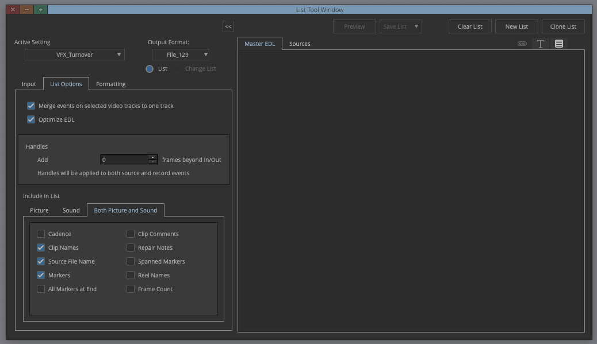
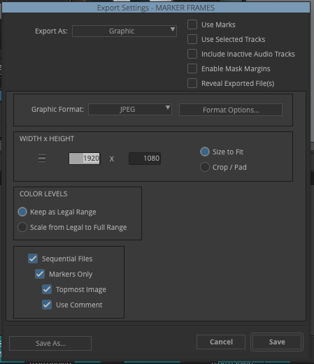
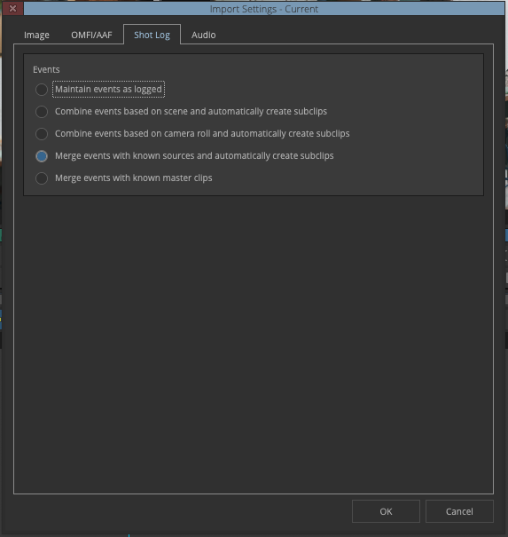
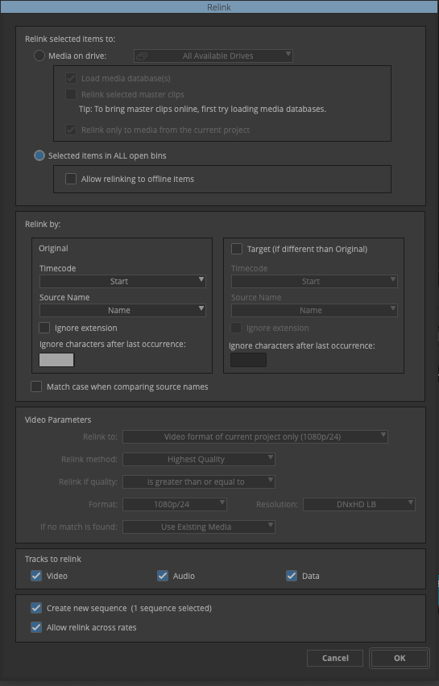
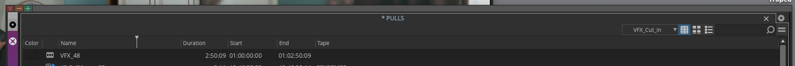

<!DOCTYPE html>
<html lang="en">
<head>
    <meta charset="UTF-8">
    <meta name="viewport" content="width=device-width, initial-scale=1.0">
    <title>VFX Turnover Tool</title>
    <script src="https://cdnjs.cloudflare.com/ajax/libs/react/18.2.0/umd/react.production.min.js"></script>
    <script src="https://cdnjs.cloudflare.com/ajax/libs/react-dom/18.2.0/umd/react-dom.production.min.js"></script>
    <script src="https://cdnjs.cloudflare.com/ajax/libs/babel-standalone/7.23.5/babel.min.js"></script>
    <script src="https://cdn.tailwindcss.com"></script>
    <link rel="preconnect" href="https://fonts.googleapis.com">
    <link rel="preconnect" href="https://fonts.gstatic.com" crossorigin>
    <link href="https://fonts.googleapis.com/css2?family=Inter:ital,wght@0,200;1,700&family=Barlow+Condensed:ital,wght@1,800&family=Barlow:wght@300&family=Source+Code+Pro:wght@500&display=swap" rel="stylesheet">
    <style>
        /* Root sits above shader canvas */
        body  { background: #0a0f14; }
        #root { position: relative; z-index: 1; }

        /* 1. Title shimmer sweep */
        @keyframes shimmer {
            0%   { background-position: -200% center; }
            100% { background-position:  200% center; }
        }
        .title-shimmer {
            background: linear-gradient(90deg, #ffffff 40%, #14b8a6 50%, #ffffff 60%);
            background-size: 200% auto;
            -webkit-background-clip: text;
            background-clip: text;
            -webkit-text-fill-color: transparent;
            animation: shimmer 3.5s linear infinite;
        }

        /* 2. Page fade-in transition */
        @keyframes fadeInUp {
            from { opacity: 0; transform: translateY(10px); }
            to   { opacity: 1; transform: translateY(0); }
        }
        .page-enter { animation: fadeInUp 0.25s ease-out forwards; }

        /* 3. Table row stagger */
        @keyframes rowIn {
            from { opacity: 0; transform: translateX(-6px); }
            to   { opacity: 1; transform: translateX(0); }
        }
        .table-row-anim {
            animation: rowIn 0.2s ease-out both;
            animation-delay: min(calc(var(--row-i, 0) * 15ms), 450ms);
        }

        /* 4. Teal button glow + ripple */
        .btn-teal { position: relative; overflow: hidden; }
        .btn-teal:not(:disabled):hover {
            box-shadow: 0 0 18px rgba(20,184,166,0.25), 0 0 6px rgba(20,184,166,0.15);
        }
        .ripple {
            position: absolute; border-radius: 50%;
            background: rgba(255,255,255,0.18);
            transform: scale(0);
            animation: ripple-out 0.5s linear;
            pointer-events: none;
        }
        @keyframes ripple-out { to { transform: scale(4); opacity: 0; } }

        /* 5. Status dot pulse */
        .status-dot { display: inline-block; width: 8px; height: 8px; border-radius: 50%; flex-shrink: 0; }

        /* ── Light theme overrides ──────────────────────────────────────────── */
        /* NOTE: Tailwind CDN escapes # as \# in generated class selectors,   */
        /* so .bg-[#0a0f14] becomes .bg-\[\#0a0f14\] in the stylesheet.       */
        [data-theme="light"] body    { background: #f1f5f9; }
        [data-theme="light"] #bg-shader { opacity: 0.04; }

        /* Core backgrounds — two selectors per rule: \# (Tailwind CDN) and # (fallback) */
        [data-theme="light"] .bg-\[\#0a0f14\] { background-color: #f1f5f9 !important; }
        [data-theme="light"] .bg-\[\#0d1318\] { background-color: #f8fafc !important; }
        [data-theme="light"] .bg-\[\#1a2530\] { background-color: #e2e8f0 !important; }
        [data-theme="light"] .bg-\[\#14b8a6\]\/10 { background-color: rgba(13,148,136,0.07) !important; }

        /* Borders */
        [data-theme="light"] .border-\[\#1a2530\] { border-color: #cbd5e1 !important; }
        [data-theme="light"] .border-\[\#2a3545\] { border-color: #94a3b8 !important; }

        /* Text */
        [data-theme="light"] .text-white    { color: #0f172a !important; }
        [data-theme="light"] .text-gray-300 { color: #334155 !important; }
        [data-theme="light"] .text-gray-400 { color: #64748b !important; }
        [data-theme="light"] .text-gray-500 { color: #94a3b8 !important; }
        [data-theme="light"] .text-gray-600 { color: #94a3b8 !important; }

        /* Hover states */
        [data-theme="light"] .hover\:bg-\[\#243040\]:hover         { background-color: #e2e8f0 !important; }
        [data-theme="light"] .hover\:bg-\[\#1a2530\]\/50:hover     { background-color: rgba(203,213,225,0.5) !important; }
        [data-theme="light"] .hover\:border-\[\#14b8a6\]\/50:hover { border-color: rgba(13,148,136,0.5) !important; }

        /* Disabled buttons */
        [data-theme="light"] .disabled\:bg-\[\#1a2530\]:disabled { background-color: #e2e8f0 !important; }
        [data-theme="light"] .disabled\:text-gray-600:disabled   { color: #94a3b8 !important; }

        /* Inputs & selects */
        [data-theme="light"] input:not([type="file"]),
        [data-theme="light"] select  { color: #0f172a !important; }
        [data-theme="light"] option  { background-color: #ffffff; color: #0f172a; }

        /* Tour overlay */
        [data-theme="light"] .tour-tooltip {
            background: #ffffff;
            box-shadow: 0 8px 40px rgba(0,0,0,0.12), 0 0 0 1px rgba(13,148,136,0.2);
        }
        [data-theme="light"] .tour-arrow     { background: #ffffff; }
        [data-theme="light"] .tour-highlight { box-shadow: 0 0 0 9999px rgba(100,116,139,0.45); }

        /* ── CSS custom properties (theme-aware semantic classes) ────────────── */
        /* Used as a reliable fallback alongside the Tailwind selector overrides */
        :root {
            --t-bg: #0a0f14; --t-card: #0d1318; --t-raised: #1a2530;
            --t-border: #1a2530; --t-border-lite: #2a3545;
            --t-text-1: #ffffff; --t-text-2: #d1d5db; --t-text-3: #9ca3af; --t-text-4: #6b7280;
            --t-hover-nav: #243040; --t-hover-row: rgba(26,37,48,0.5); --t-disabled-bg: #1a2530;
        }
        [data-theme="light"] {
            --t-bg: #f1f5f9; --t-card: #f8fafc; --t-raised: #e2e8f0;
            --t-border: #cbd5e1; --t-border-lite: #94a3b8;
            --t-text-1: #0f172a; --t-text-2: #334155; --t-text-3: #64748b; --t-text-4: #94a3b8;
            --t-hover-nav: #e2e8f0; --t-hover-row: rgba(203,213,225,0.5); --t-disabled-bg: #e2e8f0;
        }
        .t-bg   { background-color: var(--t-bg)   !important; }
        .t-card { background-color: var(--t-card) !important; }
        .t-raised { background-color: var(--t-raised) !important; }
        .t-border { border-color: var(--t-border) !important; }
        .t-border-lite { border-color: var(--t-border-lite) !important; }
        .t-text-1 { color: var(--t-text-1) !important; }
        .t-text-2 { color: var(--t-text-2) !important; }
        .t-text-3 { color: var(--t-text-3) !important; }
        .t-text-4 { color: var(--t-text-4) !important; }
        .t-hover-nav:hover  { background-color: var(--t-hover-nav)  !important; }
        .t-hover-row:hover  { background-color: var(--t-hover-row)  !important; }
        .t-disabled:disabled { background-color: var(--t-disabled-bg) !important; }

        /* 6. Tour button */
        .tour-fab {
            position: fixed;
            bottom: 28px;
            right: 28px;
            z-index: 900;
            display: flex;
            align-items: center;
            gap: 7px;
            padding: 10px 18px 10px 14px;
            background: #14b8a6;
            color: #0a0f14;
            border: none;
            border-radius: 999px;
            font-family: 'Source Code Pro', monospace;
            font-weight: 700;
            font-size: 13px;
            cursor: pointer;
            box-shadow: 0 0 0 0 rgba(20,184,166,0.5);
            animation: fab-pulse 2.8s ease-in-out infinite;
            transition: background 0.15s, box-shadow 0.15s;
        }
        .tour-fab:hover {
            background: #0d9488;
            box-shadow: 0 0 20px rgba(20,184,166,0.4);
            animation: none;
        }
        .theme-fab {
            position: fixed;
            bottom: 28px;
            left: 28px;
            z-index: 900;
            width: 44px;
            height: 44px;
            border-radius: 50%;
            background: #14b8a6;
            color: #0a0f14;
            border: none;
            cursor: pointer;
            display: flex;
            align-items: center;
            justify-content: center;
            box-shadow: 0 2px 12px rgba(20,184,166,0.3);
            transition: background 0.15s, box-shadow 0.15s;
        }
        .theme-fab:hover {
            background: #0d9488;
            box-shadow: 0 0 20px rgba(20,184,166,0.4);
        }
        .tour-fab-icon {
            width: 20px; height: 20px;
            border-radius: 50%;
            border: 2px solid #0a0f14;
            display: flex; align-items: center; justify-content: center;
            font-size: 12px; font-weight: 800; flex-shrink: 0;
        }
        @keyframes fab-pulse {
            0%,100% { box-shadow: 0 0 0 0 rgba(20,184,166,0.45); }
            60%      { box-shadow: 0 0 0 10px rgba(20,184,166,0); }
        }

        .tour-highlight {
            position: absolute;
            border: 2px solid #14b8a6;
            border-radius: 10px;
            box-shadow: 0 0 0 9999px rgba(0,0,10,0.62);
            z-index: 1001;
            pointer-events: none;
        }
        .tour-tooltip {
            position: absolute;
            z-index: 1002;
            background: #0d1318;
            border: 1px solid #14b8a6;
            border-radius: 12px;
            padding: 20px 22px;
            max-width: 440px;
            min-width: 280px;
            box-shadow: 0 8px 40px rgba(0,0,0,0.75), 0 0 0 1px rgba(20,184,166,0.15);
        }
        .tour-arrow {
            position: absolute;
            top: -7px; left: 20px;
            width: 12px; height: 12px;
            background: #0d1318;
            border-left: 1px solid #14b8a6;
            border-top: 1px solid #14b8a6;
            transform: rotate(45deg);
        }
        .status-dot-online { background: #14b8a6; animation: pulse-teal 2s ease-in-out infinite; }
        .status-dot-error  { background: #f87171; animation: pulse-red  1.2s ease-in-out infinite; }
        @keyframes pulse-teal {
            0%,100% { box-shadow: 0 0 0 0 rgba(20,184,166,0.5); }
            50%     { box-shadow: 0 0 0 5px rgba(20,184,166,0); }
        }
        @keyframes pulse-red {
            0%,100% { box-shadow: 0 0 0 0 rgba(248,113,113,0.5); }
            50%     { box-shadow: 0 0 0 5px rgba(248,113,113,0); }
        }
    </style>
</head>
<body style="font-family: 'Source Code Pro', monospace; font-weight: 500; font-size: 20px;">
    <canvas id="bg-shader" style="position:fixed;top:0;left:0;width:100%;height:100%;z-index:0;pointer-events:none;display:block;"></canvas>
    <script>(function(){var t=localStorage.getItem('vfx_theme');document.documentElement.setAttribute('data-theme',t==='light'?'light':'dark');})();</script>
    <div id="root"></div>
    <script>
    window.VFXLog = (() => {
        const MAX = 300;
        const entries = [];
        function log(category, message, data) {
            const entry = { ts: new Date().toISOString(), category, message, data: data ?? null };
            entries.push(entry);
            if (entries.length > MAX) entries.shift();
            const line = `[${entry.ts}] [${category}] ${message}`;
            console.log(data ? line + ' ' + JSON.stringify(data) : line);
        }
        return {
            log,
            getEntries: () => [...entries],
            clear: () => { entries.length = 0; },
            format: () => entries.map(e =>
                `[${e.ts}] [${e.category}] ${e.message}` + (e.data ? ' ' + JSON.stringify(e.data) : '')
            ).join('\n')
        };
    })();

    window.onerror = (msg, src, line, col, err) =>
        window.VFXLog.log('ERROR', msg, { src, line, col, stack: err?.stack ?? null });

    window.onunhandledrejection = e =>
        window.VFXLog.log('ERROR', 'Unhandled rejection', { reason: String(e.reason) });
    </script>
    <script type="text/babel">
        const { useState, useEffect, useRef } = React;

        // ─── Utility functions ────────────────────────────────────────────────────
        const parseTimecode = (tc, fr) => { const [h,m,s,f] = tc.split(':').map(Number); return h*3600*fr + m*60*fr + s*fr + f; };
        const framesToTimecode = (tf, fr) => {
            const h = Math.floor(tf / (3600*fr)); tf %= (3600*fr);
            const m = Math.floor(tf / (60*fr)); tf %= (60*fr);
            const s = Math.floor(tf / fr); const f = tf % fr;
            return `${String(h).padStart(2,'0')}:${String(m).padStart(2,'0')}:${String(s).padStart(2,'0')}:${String(f).padStart(2,'0')}`;
        };
        const addTimecode = (tc, fa, fr) => framesToTimecode(parseTimecode(tc, fr) + fa, fr);
        const subtractTimecode = (tc, fs, fr) => framesToTimecode(Math.max(0, parseTimecode(tc, fr) - fs), fr);
        const cmpEventNum = (a, b) => parseInt(a.event_number) - parseInt(b.event_number);

        // ─── Icon ─────────────────────────────────────────────────────────────────
        const Icon = ({ path }) => <svg className="w-5 h-5" fill="none" stroke="currentColor" viewBox="0 0 24 24"><path strokeLinecap="round" strokeLinejoin="round" strokeWidth={2} d={path} /></svg>;

        // ─── DropZone ─────────────────────────────────────────────────────────────
        const DropZone = ({ dragActive, onDragEnter, onDragLeave, onDrop, onChange, accept, iconPath, inactiveLabel, activeLabel, fileType, loaded, loadedText, filePath, onClear, clearLabel }) => (
            <div className="flex gap-2 items-stretch">
                <div onDragEnter={onDragEnter} onDragLeave={onDragLeave} onDragOver={e => e.preventDefault()} onDrop={onDrop}
                     className={`flex-1 bg-[#0a0f14] t-bg border-2 border-dashed rounded-xl p-6 text-center cursor-pointer transition ${dragActive ? 'border-[#14b8a6] bg-[#14b8a6]/10' : 'border-[#2a3545] t-border-lite hover:border-[#14b8a6]/50'}`}>
                    <label className="cursor-pointer block">
                        <div className="text-[#14b8a6] mb-2 flex justify-center"><Icon path={iconPath} /></div>
                        <span className="text-sm font-medium text-gray-300">{dragActive ? activeLabel : inactiveLabel}</span>
                        <div className="text-xs text-gray-500 mt-1">{fileType}</div>
                        {loaded && <div className="mt-2 text-xs text-[#14b8a6]">✓ {loadedText}</div>}
                        {filePath && <div className="mt-1 text-xs text-gray-400 break-all">{filePath}</div>}
                        <input type="file" accept={accept} onChange={onChange} className="hidden" />
                    </label>
                </div>
                {onClear && (
                    <button onClick={onClear} className="px-2 bg-red-900/30 hover:bg-red-900/50 border border-red-800 text-red-400 rounded-lg text-xs transition flex flex-col items-center justify-center self-stretch" title={`Clear ${clearLabel}`}>
                        <span>{clearLabel} Clear</span>
                        <svg className="w-4 h-4 mt-1" fill="none" stroke="currentColor" viewBox="0 0 24 24"><path strokeLinecap="round" strokeLinejoin="round" strokeWidth={2} d="M19 7l-.867 12.142A2 2 0 0116.138 21H7.862a2 2 0 01-1.995-1.858L5 7m5 4v6m4-6v6m1-10V4a1 1 0 00-1-1h-4a1 1 0 00-1 1v3M4 7h16" /></svg>
                    </button>
                )}
            </div>
        );

        // ─── EDLPreview ───────────────────────────────────────────────────────────
        const EDLPreview = ({ edlData, edlFilePath, onExportChangelist, onClearChangelist }) => {
            const hasChangelist = edlData.events.some(e => ['new','removed','trimmed_ok','trimmed_pull'].includes(e.changeStatus));
            return (
            <div className="bg-[#0a0f14] t-bg border border-[#1a2530] t-border rounded-xl p-4 mb-6">
                <div className="flex justify-between items-center mb-3">
                    <h3 className="text-xs font-medium text-[#14b8a6] uppercase">Preview</h3>
                    <div className="flex gap-2">
                        {hasChangelist && <button onClick={onClearChangelist} className="px-3 py-1 rounded-lg text-xs border border-gray-600 text-gray-400 bg-transparent hover:border-gray-400 hover:text-white transition">Clear changelist</button>}
                        <button onClick={onExportChangelist} className="px-3 py-1 bg-[#14b8a6] hover:bg-[#0d9488] text-[#0a0f14] font-medium rounded-lg text-xs transition btn-teal">Export Changelist</button>
                    </div>
                </div>
                <div className="text-sm text-gray-300 space-y-1 mb-4">
                    <p><span className="font-medium text-white">File:</span> {edlFilePath || `${edlData.edl_metadata.edl_filename}.edl`}</p>
                    <p>
                        <span className="font-medium text-white">Events:</span> {edlData.events.filter(e => e.changeStatus !== 'removed').length}
                        {edlData.events.some(e => e.changeStatus === 'new') && <span className="ml-2 text-green-400">+{edlData.events.filter(e => e.changeStatus === 'new').length} new</span>}
                        {edlData.events.some(e => e.changeStatus === 'removed') && <span className="ml-2 text-red-400">-{edlData.events.filter(e => e.changeStatus === 'removed').length} removed</span>}
                        {edlData.events.some(e => e.changeStatus === 'trimmed_ok') && <span className="ml-2 text-yellow-400">{edlData.events.filter(e => e.changeStatus === 'trimmed_ok').length} changed (no pull)</span>}
                        {edlData.events.some(e => e.changeStatus === 'trimmed_pull') && <span className="ml-2 text-orange-400">{edlData.events.filter(e => e.changeStatus === 'trimmed_pull').length} need pull</span>}
                        {edlData.events.some(e => e.changeStatus === 'missing_id') && <span className="ml-2 text-purple-400">{edlData.events.filter(e => e.changeStatus === 'missing_id').length} missing VFX ID</span>}
                        {edlData.events.some(e => e.changeStatus === 'marker_changed') && <span className="ml-2 text-amber-400">{edlData.events.filter(e => e.changeStatus === 'marker_changed').length} marker ID changed</span>}
                    </p>
                </div>
                {edlData.events.some(e => e.changeStatus === 'missing_id') && (
                    <div className="bg-purple-900/20 border border-purple-800 rounded-lg p-3 mb-3 text-xs">
                        <span className="text-purple-400 font-semibold uppercase">Missing VFX ID — </span>
                        <span className="text-purple-300">the following clips have no VFX ID assigned: </span>
                        <span className="text-purple-400 font-mono">{edlData.events.filter(e => e.changeStatus === 'missing_id').sort(cmpEventNum).map(e => `event ${e.event_number}${e.reel ? ` (${e.reel})` : ''}${e.prevVfxId ? ` — was: ${e.prevVfxId}` : ''}`).join(', ')}</span>
                    </div>
                )}
                {edlData.events.some(e => e.reelMismatch) && (
                    <div className="bg-red-900/20 border border-red-800 rounded-lg p-3 mb-3 text-xs">
                        <span className="text-red-400 font-semibold uppercase">Reel mismatch — </span>
                        <span className="text-red-300">the following VFX IDs have a different reel than the previous version: </span>
                        <span className="text-red-400 font-mono">{edlData.events.filter(e => e.reelMismatch).map(e => e['VFX ID']).join(', ')}</span>
                    </div>
                )}
                {edlData.events.some(e => e.changeStatus === 'marker_changed') && (
                    <div className="bg-amber-900/20 border border-amber-800 rounded-lg p-3 mb-3 text-xs">
                        <span className="text-amber-400 font-semibold uppercase">Marker ID changed — check in Avid — </span>
                        <span className="text-amber-300">the following clips have a different VFX ID in the new EDL markers: </span>
                        <span className="text-amber-400 font-mono">{edlData.events.filter(e => e.changeStatus === 'marker_changed').map(e => `${e['VFX ID']}${e.prevVfxId ? ` (was: ${e.prevVfxId})` : ' (new marker)'}`).join(', ')}</span>
                    </div>
                )}
                <div className="overflow-x-auto max-h-96 overflow-y-auto border border-[#1a2530] t-border rounded-lg">
                    <table className="w-full text-xs">
                        <thead className="bg-[#1a2530] t-raised text-[#14b8a6] uppercase sticky top-0 z-10">
                            <tr>{['#', 'VFX ID', 'Status', 'Reel', 'Source In', 'Source Out', 'Record In', 'Record Out'].map(h => <th key={h} className="px-3 py-2 text-left">{h}</th>)}</tr>
                        </thead>
                        <tbody className="text-gray-300">
                            {[...edlData.events].sort((a, b) => { const n = cmpEventNum(a, b); return n !== 0 ? n : (a['VFX ID'] || '').localeCompare(b['VFX ID'] || ''); }).map((e, i) => (
                                <tr key={i} style={{"--row-i": i}} className={`border-b border-[#1a2530] t-border t-hover-row hover:bg-[#1a2530]/50 table-row-anim ${e.changeStatus === 'missing_id' ? 'border-l-2 border-l-purple-500' : e.changeStatus === 'marker_changed' ? 'border-l-2 border-l-amber-500' : e.reelMismatch ? 'border-l-2 border-l-red-500' : ''} ${e.changeStatus === 'new' ? 'bg-green-900/20' : e.changeStatus === 'removed' ? 'bg-red-900/20' : e.changeStatus === 'trimmed_ok' ? 'bg-yellow-900/20' : e.changeStatus === 'trimmed_pull' ? 'bg-orange-900/20' : e.changeStatus === 'missing_id' ? 'bg-purple-900/20' : e.changeStatus === 'marker_changed' ? 'bg-amber-900/20' : ''}`}>
                                    <td className={`px-3 py-2 ${e.changeStatus === 'removed' ? 'text-red-400 line-through' : ''}`}>{e.event_number}</td>
                                    <td className={`px-3 py-2 font-mono ${e.changeStatus === 'new' ? 'text-green-400 font-semibold' : e.changeStatus === 'removed' ? 'text-red-400 line-through' : e.changeStatus === 'missing_id' ? 'text-purple-400 font-semibold italic' : e.changeStatus === 'marker_changed' ? 'text-amber-400 font-semibold' : e.reelMismatch ? 'text-red-400 font-semibold' : e.LOC ? 'text-[#14b8a6] font-semibold' : ''}`}>{e['VFX ID'] || '[NO ID]'}{e.changeStatus === 'missing_id' && e.prevVfxId && <span className="ml-1 text-purple-500 font-normal not-italic text-xs">(was: {e.prevVfxId})</span>}{e.changeStatus === 'marker_changed' && e.prevVfxId && <span className="ml-1 text-amber-500 font-normal text-xs">(was: {e.prevVfxId})</span>}</td>
                                    <td className="px-3 py-2 text-xs">
                                        {e.changeStatus === 'new' && <span className="text-green-400 font-medium">NEW - NEED TO PULL</span>}
                                        {e.changeStatus === 'removed' && <span className="text-red-400 font-medium">REMOVED</span>}
                                        {e.changeStatus === 'trimmed_ok' && <span className="text-yellow-400 font-medium">TRIMMED BUT NO NEED TO PULL</span>}
                                        {e.changeStatus === 'trimmed_pull' && <span className="text-orange-400 font-medium">TRIMMED - NEED TO PULL</span>}
                                        {e.changeStatus === 'missing_id' && <span className="text-purple-400 font-medium">MISSING VFX ID</span>}
                                        {e.changeStatus === 'marker_changed' && <span className="text-amber-400 font-medium">MARKER ID CHANGED — CHECK IN AVID</span>}
                                    </td>
                                    <td className={`px-3 py-2 ${e.changeStatus === 'removed' ? 'text-red-400 line-through' : e.reelMismatch ? 'text-red-400 font-semibold' : ''}`}>{e.reel}{e.reelMismatch && <span className="ml-1 text-red-500 font-normal">(was: {e.prevReel})</span>}</td>
                                    <td className={`px-3 py-2 font-mono ${e.changeStatus === 'removed' ? 'text-red-400 line-through' : e.changeStatus === 'trimmed_pull' && e.source_start_TC !== e.prevSourceIn ? 'text-orange-400' : e.changeStatus === 'trimmed_ok' && e.source_start_TC !== e.prevSourceIn ? 'text-yellow-400' : e.changeStatus === 'marker_changed' && e.prevSourceIn && e.source_start_TC !== e.prevSourceIn ? 'text-amber-400' : ''}`}>{e.source_start_TC}{e.changeStatus === 'marker_changed' && e.prevSourceIn && e.source_start_TC !== e.prevSourceIn && <span className="ml-1 text-amber-600 font-normal text-xs">(was: {e.prevSourceIn})</span>}</td>
                                    <td className={`px-3 py-2 font-mono ${e.changeStatus === 'removed' ? 'text-red-400 line-through' : e.changeStatus === 'trimmed_pull' && e.source_end_TC !== e.prevSourceOut ? 'text-orange-400' : e.changeStatus === 'trimmed_ok' && e.source_end_TC !== e.prevSourceOut ? 'text-yellow-400' : e.changeStatus === 'marker_changed' && e.prevSourceOut && e.source_end_TC !== e.prevSourceOut ? 'text-amber-400' : ''}`}>{e.source_end_TC}{e.changeStatus === 'marker_changed' && e.prevSourceOut && e.source_end_TC !== e.prevSourceOut && <span className="ml-1 text-amber-600 font-normal text-xs">(was: {e.prevSourceOut})</span>}</td>
                                    <td className={`px-3 py-2 font-mono ${e.changeStatus === 'removed' ? 'text-red-400 line-through' : ''}`}>{e.record_start_TC}</td>
                                    <td className={`px-3 py-2 font-mono ${e.changeStatus === 'removed' ? 'text-red-400 line-through' : ''}`}>{e.record_end_TC}</td>
                                </tr>
                            ))}
                        </tbody>
                    </table>
                </div>
            </div>
            );
        };

        // ─── InfoPage ─────────────────────────────────────────────────────────────
        const InfoPage = () => (
            <div className="max-w-none text-sm text-gray-300 space-y-4">
                <h2 className="text-xl font-semibold text-white">About</h2>
                <p>The VFX Turnover Tool v0.2 streamlines VFX sequence preparation for post-production. It processes EDL files and generates multiple output formats for VFX production.</p>
                <h3 className="text-base font-semibold text-[#14b8a6] mt-6">Features</h3>
                <ul className="list-disc pl-5 space-y-1">
                    <li>Automatic VFX ID generation based on scene numbers</li>
                    <li>Support for existing markers (LOC lines)</li>
                    <li>Multiple export formats</li>
                    <li>Timecode calculations with customizable FPS and handles</li>
                    <li>Drag-and-drop file upload</li>
                    <li>Marker position options - place markers at clip start or middle</li>
                    <li>Persistent settings and file data - settings, loaded EDL and AVID Bin files are saved across browser sessions</li>
                    <li>Clear buttons to easily remove loaded files</li>
                    <li>Change tracking - new clips in green (NEW - NEED TO PULL), removed in red, trimmed clips flagged as TRIMMED BUT NO NEED TO PULL (yellow) or TRIMMED - NEED TO PULL (orange), clips missing a VFX ID in purple, reel mismatch warnings; table sorted by VFX ID</li>
                    <li>Changelist export - tab-delimited file with Status column for import into spreadsheets or databases</li>
                    <li>VFX Cut-ins - import incoming VFX (.mov files) bin TAB export to generate a cut-in EDL for the timeline</li>
                </ul>
                <h3 className="text-base font-semibold text-[#14b8a6] mt-6">VFX ID Format</h3>
                <p>Format: <code className="bg-[#1a2530] t-raised px-2 py-1 rounded text-[#14b8a6]">FILM_ID_SCENE_SHOT</code> (e.g., FILM_ID_001_010)</p>
                <h3 className="text-base font-semibold text-[#14b8a6] mt-6">Google Sheets Integration</h3>
                <p>If you use Google Sheets to manage your VFX database, you can automatically import Avid-exported frame images into your sheet using <a href="https://github.com/pnardese/insertShotImages" target="_blank" rel="noopener noreferrer" className="text-[#14b8a6] hover:underline">insertShotImages</a> — a companion script that reads the exported JPGs and inserts them into the corresponding rows of your Google Sheet.</p>
                <h3 className="text-base font-semibold text-[#14b8a6] mt-6">Supported Files</h3>
                <p><strong className="text-white">EDL:</strong> .edl (File_129, CMX 3600) | <strong className="text-white">Bin:</strong> .txt</p>
                <h3 className="text-base font-semibold text-[#14b8a6] mt-6">Contact</h3>
                <p><a href="mailto:pnardese@gmail.com" className="text-[#14b8a6] hover:underline">pnardese@gmail.com</a></p>

                <div className="border-t border-[#1a2530] t-border mt-8 pt-6 space-y-6">
                <h2 className="text-xl font-semibold text-white">Help</h2>
                <div>
                    <h3 className="text-base font-semibold text-[#14b8a6] mb-2">1. Create EDL from Avid</h3>
                    <p className="mb-3">Create an EDL (File_129 or CMX3600) from the Avid video track containing only shots planned for VFX. In List Options in Avid, check: <strong className="text-white">Clip Names</strong>, <strong className="text-white">Source File Name</strong>, and <strong className="text-white">Markers</strong>.</p>
                    <p className="mb-3">VFX IDs are created automatically based on the following rule: <code className="bg-[#1a2530] t-raised px-2 py-1 rounded text-[#14b8a6]">FILM_ID_Scene_num</code>, where num is a progressive number like 010, 020, 030, etc.</p>

                    <div className="bg-[#0a0f14] t-bg border border-[#1a2530] t-border rounded-lg p-4 mb-3">
                        <p className="text-xs font-semibold text-[#14b8a6] uppercase tracking-wider mb-2">How scene numbers are extracted</p>
                        <p className="mb-2">The EDL contains a comment line for each event with the subclip name, for example:</p>
                        <pre className="bg-[#0d1318] t-card border border-[#2a3545] t-border-lite rounded px-3 py-2 text-xs text-[#14b8a6] font-mono mb-3 overflow-x-auto">*FROM CLIP NAME:  33-4-/01</pre>
                        <p className="mb-2">The tool reads the <strong className="text-white">first sequence of digits</strong> in the clip name as the scene number — in this example <code className="bg-[#1a2530] t-raised px-1 rounded">33</code>, padded to three digits: <code className="bg-[#1a2530] t-raised px-1 rounded">033</code>. The shot counter within that scene starts at <code className="bg-[#1a2530] t-raised px-1 rounded">010</code> and increments by 10 for each additional clip in the same scene, giving IDs such as <code className="bg-[#1a2530] t-raised px-1 rounded">FILM_ID_033_010</code>, <code className="bg-[#1a2530] t-raised px-1 rounded">FILM_ID_033_020</code>, etc.</p>
                        <p className="text-gray-500 text-xs">This convention assumes a standard feature-film workflow where subclips are named with scene number followed by take information (e.g. <span className="font-mono">33-4-/01</span> = scene 33, shot 4, take 1). If your project uses a different naming convention, assign VFX IDs manually in Avid Media Composer via markers before exporting the EDL.</p>
                    </div>

                    <p className="mb-3">When the EDL has <strong className="text-white">no LOC markers at all</strong>, VFX IDs are auto-generated for every clip. When the EDL contains <strong className="text-white">any LOC markers</strong> (a marked EDL), the tool reads VFX IDs directly from those markers and never overwrites them. Clips without a marker in a marked EDL are flagged with a <strong className="text-purple-400">MISSING VFX ID</strong> warning — assign the marker in Avid and re-export the EDL. Therefore, if you add VFX shots in Avid, you need to add markers with their new corresponding VFX IDs before exporting the EDL.</p>
                    
                    <p className="text-xs text-gray-500 mt-1">Configuration of the list tool in Avid Media Composer for EDL exporting.</p>
                    <p className="mt-3">Once exported, load the <code className="bg-[#1a2530] t-raised px-1 rounded">.edl</code> file into the tool by <strong className="text-white">dragging and dropping it</strong> onto the drop zone in the main window, or clicking the drop zone to <strong className="text-white">browse your local disk</strong>.</p>
                </div>
                <div>
                    <h3 className="text-base font-semibold text-[#14b8a6] mb-2">2. Export Markers and Subcaps</h3>
                    <p className="mb-3">Export markers and subcaps and import them into Avid to help keep track of VFXs.</p>
                    <p className="mb-3">The <strong className="text-white">Position</strong> option lets you choose where markers are placed: <strong className="text-white">Start</strong> places the marker at the beginning of each clip, while <strong className="text-white">Middle</strong> places it at the midpoint between the clip's start and end timecodes.</p>
                    <p>Additional marker options: <strong className="text-white">User</strong> sets the author info associated with each marker, <strong className="text-white">Track</strong> selects the video track number (TC, V1–V8) where markers are placed, and <strong className="text-white">Color</strong> defines the marker color.</p>
                </div>
                <div>
                    <h3 className="text-base font-semibold text-[#14b8a6] mb-2">3. Export Frames</h3>
                    <p className="mb-3">Export markers from Avid as JPGs to use them to build a VFX Shots database.</p>
                    
                    <p className="text-xs text-gray-500 mt-1">Export settings for frame extraction at marker's position.</p>
                    <p className="mt-3">If you use <strong className="text-white">Google Sheets</strong> to manage your VFX database, you can automatically import the exported frame images into your sheet using <a href="https://github.com/pnardese/insertShotImages" target="_blank" rel="noopener noreferrer" className="text-[#14b8a6] hover:underline">insertShotImages</a> — a companion script that reads the exported JPGs and inserts them into the corresponding rows of your Google Sheet.</p>
                </div>
                <div>
                    <h3 className="text-base font-semibold text-[#14b8a6] mb-2">4. Export TAB Text Files</h3>
                    <p className="mb-3">Export TAB text files with VFX IDs info, that can be imported in any database/spreadsheet to build a VFX shot database. The <strong className="text-white">Changelist Export</strong> uses the same columns, with <code className="bg-[#1a2530] t-raised px-1 rounded">Status</code> populated.</p>
                    <table className="w-full text-sm border-collapse">
                        <thead>
                            <tr className="text-left text-[#14b8a6] border-b border-[#1a2530] t-border">
                                <th className="pb-1 pr-6 font-medium">Column</th>
                                <th className="pb-1 font-medium">Description</th>
                            </tr>
                        </thead>
                        <tbody className="text-gray-300">
                            {[
                                ['#', 'Shot counter'],
                                ['Name', 'VFX ID'],
                                ['Thumbnail', 'Empty — for thumbnail reference'],
                                ['Comments', 'Empty'],
                                ['Status', 'Empty in DB Export; NEW / REMOVED / CHANGED - NO PULL NEEDED / NEED PULL in Changelist'],
                                ['Date', 'Empty'],
                                ['Duration', 'Source clip duration as timecode'],
                                ['Start', 'Source start timecode'],
                                ['End', 'Source end timecode'],
                                ['Frame Count Duration', 'Duration in frames'],
                                ['Handles', 'Handle frames configured for the project'],
                                ['Tape', 'Source reel / tape name'],
                            ].map(([col, desc]) => (
                                <tr key={col} className="border-b border-[#1a2530]/50">
                                    <td className="py-1 pr-6"><code className="bg-[#1a2530] t-raised px-1 rounded">{col}</code></td>
                                    <td className="py-1 text-gray-400">{desc}</td>
                                </tr>
                            ))}
                        </tbody>
                    </table>
                </div>
                <div>
                    <h3 className="text-base font-semibold text-[#14b8a6] mb-2">5. Changelist</h3>
                    <p className="mb-3">When a new EDL is loaded over a previously cached one, the tool automatically compares the two versions and flags each clip in the Preview table:</p>
                    <ul className="list-disc pl-5 space-y-1 mb-3">
                        <li><strong className="text-green-400">Green — NEW - NEED TO PULL</strong>: VFX ID not present in the previous EDL. A pull is always required.</li>
                        <li><strong className="text-red-400">Red — REMOVED</strong>: VFX ID present in the previous EDL but missing in the new one. Shown for reference; excluded from all exports.</li>
                        <li><strong className="text-yellow-400">Yellow — TRIMMED BUT NO NEED TO PULL</strong>: Source timecodes changed, but the new in/out points fall within the existing pull range (<code className="bg-[#1a2530] t-raised px-1 rounded">old Source In − handles</code> → <code className="bg-[#1a2530] t-raised px-1 rounded">old Source Out + handles</code>). The material is already covered by the previous pull. Changed timecodes are highlighted in yellow.</li>
                        <li><strong className="text-orange-400">Orange — TRIMMED - NEED TO PULL</strong>: Source timecodes changed and the new in/out points exceed the existing pull range. A new pull is required. Changed timecodes are highlighted in orange.</li>
                        <li><strong className="text-purple-400">Purple — MISSING VFX ID</strong>: Clip has no LOC marker in a marked EDL (no VFX ID assigned). If the clip can be matched to a cached event by reel and source timecode, the previous VFX ID is shown as <code className="bg-[#1a2530] t-raised px-1 rounded">(was: PREV_ID)</code>.</li>
                        <li><strong className="text-amber-400">Amber — MARKER ID CHANGED — CHECK IN AVID</strong>: A clip matched by reel and source timecode has a different VFX ID in the new EDL's marker compared to the cached version. The previous ID is shown as <code className="bg-[#1a2530] t-raised px-1 rounded">(was: PREV_ID)</code>. Verify the change is intentional in Avid before proceeding.</li>
                    </ul>
                    <p className="mb-3">Warning banners are shown at the top of the Preview panel when clips have a <strong className="text-white">reel mismatch</strong> (source reel changed between versions — affected VFX IDs listed in red), are <strong className="text-white">missing a VFX ID</strong> (listed in EDL event order with event number and reel), or have a <strong className="text-white">marker ID changed</strong> (listed with new and previous VFX IDs). Rows with a reel mismatch show a red left border.</p>
                    <p className="mb-3">Preview table rows are sorted by EDL event order. Removed events appear at the end of the table.</p>
                    <p>The <strong className="text-white">Export Changelist</strong> button (top-right of the Preview panel) downloads a tab-delimited <code className="bg-[#1a2530] t-raised px-1 rounded">_changelist.txt</code> file. It uses the same column structure as the DB Export, with the <strong className="text-white">Status</strong> column set to <code className="bg-[#1a2530] t-raised px-1 rounded">NEW</code>, <code className="bg-[#1a2530] t-raised px-1 rounded">REMOVED</code>, <code className="bg-[#1a2530] t-raised px-1 rounded">CHANGED - NO PULL NEEDED</code>, or <code className="bg-[#1a2530] t-raised px-1 rounded">NEED PULL</code>. All events are included so the full changelist can be imported into any spreadsheet or database.</p>
                </div>
                <div>
                    <h3 className="text-base font-semibold text-[#14b8a6] mb-2">7. Export Pulls ALE</h3>
                    <p className="mb-3">Export Pulls ALE to create pulls (subclips with VFX IDs as names from the master clips). After selecting master clips in bin, drag ALE file on bin. Import settings: <em className="text-white">Merge events with known sources and automatically create subclips</em></p>
                    <p className="mb-3">The <strong className="text-white">Resolution</strong> setting controls the <code className="bg-[#1a2530] t-raised px-1 rounded">VIDEO_FORMAT</code> field in the ALE header (default: <code className="bg-[#1a2530] t-raised px-1 rounded">1080</code>). Set it to match your project format (e.g. <code className="bg-[#1a2530] t-raised px-1 rounded">2160</code> for 4K).</p>
                    
                    <p className="text-xs text-gray-500 mt-1">Import settings.</p>
                </div>
                <div>
                    <h3 className="text-base font-semibold text-[#14b8a6] mb-2">8. Export Pulls EDL</h3>
                    <p className="mb-3">Export Pulls EDL to create a timeline with the pull subclips. Import the EDL into Avid bin, relink to the pull subclips using Names.</p>
                    
                    <p className="text-xs text-gray-500 mt-1">Relink configuration.</p>
                </div>
                <div>
                    <h3 className="text-base font-semibold text-[#14b8a6] mb-2">9. VFX Cut-ins</h3>
                    <p className="mb-3">When you receive incoming VFX (.mov files), you can import them into Avid, export the bin in TAB format to create an EDL for cutting in the VFX into the timeline. Create a bin view with the following columns: <strong className="text-white">Color</strong>, <strong className="text-white">Name</strong>, <strong className="text-white">Duration</strong>, <strong className="text-white">Start</strong>, <strong className="text-white">End</strong>, <strong className="text-white">Tape</strong>.</p>
                    
                    <p className="text-xs text-gray-500 mt-1">Columns to export from Avid bin as TAB text file.</p>
                    <p className="mt-3">Relink imported EDL to mov files like in Pulls EDL.</p>
                </div>
                <div>
                    <h3 className="text-base font-semibold text-[#14b8a6] mb-2">10. <strong className="text-white">Always double-check!!</strong></h3>
                </div>
                </div>
            </div>
        );

        // ─── Tour ─────────────────────────────────────────────────────────────────
        const TOUR_STEPS = [
            {
                targetId: 'tour-inputs',
                title: 'Project Settings',
                content: 'Configure your project before loading any files. Film ID is the prefix used when auto-generating VFX IDs (e.g. FILM_ID_001_010). FPS must match your Avid timeline frame rate. Resolution sets the VIDEO_FORMAT field in exported ALE files. Pull Handles define how many extra frames to add around each clip when building pulls.'
            },
            {
                targetId: 'tour-edl-drop',
                title: 'Load EDL',
                content: 'Drag and drop your EDL file here, or click to browse. Export the EDL from Avid (File_129 or CMX 3600) from the video track containing only VFX shots. Make sure Clip Names, Source File Name, and Markers are enabled in Avid\'s List Options.\n\nIf the EDL has no LOC markers, VFX IDs are auto-generated from the clip names for every event. If the EDL contains any LOC markers, the tool reads VFX IDs from those markers and never overwrites them — clips without a marker are flagged as MISSING VFX ID (purple). In that case, assign the marker in Avid and re-export the EDL.'
            },
            {
                targetId: 'tour-markers-subcaps',
                title: 'Markers & Subcaps',
                content: 'Markers exports a text file you can import into Avid to place colour-coded markers at each VFX shot, labelled with their VFX ID. Use User info to set the author field, Position to place the marker at the clip start or midpoint, and Track and Color to target the right video track and marker colour.\n\nSubcaps exports a subtitle file you can load in Avid as sub-captions, so VFX IDs appear as burned-in text on the timeline for easy reference.'
            },
            {
                targetId: 'tour-pulls',
                title: 'Pulls ALE & Pulls EDL',
                content: 'Pulls ALE creates an ALE file to import into an Avid bin. After selecting the master clips in the bin, drag the ALE onto it — Avid will create named subclips for each VFX shot using the pull handles you configured. Set the Resolution field to match your project format (e.g. 2160 for 4K).\n\nPulls EDL creates a timeline with the pull subclips. Import the EDL into Avid and relink to the pull subclips by Name.'
            },
            {
                targetId: 'tour-db-export',
                title: 'DB Export',
                content: 'Exports a tab-delimited text file with all VFX shot data — ID, duration, source in/out timecodes, frame count, handles, and reel — ready to import into any spreadsheet or database to build your VFX shot list.'
            },
            {
                targetId: 'tour-preview',
                scrollBlock: 'start',
                title: 'Preview & Changelist',
                content: 'The Preview table shows all VFX shots parsed from the EDL, sorted by EDL event order. Each row displays event number, VFX ID, reel, and source and record timecodes.\n\nWhen you load a new EDL over a previously cached one, the tool compares the two versions and colour-codes each row: green for new shots that need a pull, red for removed shots, yellow for trimmed shots already covered by the existing pull, orange for trimmed shots that require a new pull, purple for clips with no VFX ID assigned, and amber for clips whose marker ID changed between versions (CHECK IN AVID).\n\nWarning banners appear above the table for reel mismatches, missing VFX IDs, and changed marker IDs.\n\nThe Export Changelist button downloads a tab-delimited file with the same columns as DB Export plus a Status column, so you can import the full changelist into any spreadsheet or database.'
            },
            {
                targetId: 'tour-incoming',
                scrollBlock: 'bottom',
                title: 'Incoming VFX EDL',
                content: 'When you receive incoming VFX deliveries (.mov files), import them into Avid and export the bin as a TAB text file with columns: Color, Name, Duration, Start, End, Tape.\n\nDrop that TAB file here. The tool matches each incoming clip against the loaded EDL by source timecode and generates an EDL you can import into Avid to cut the VFX into the timeline. Relink the imported EDL to the .mov files by Name, the same way as Pulls EDL.'
            },
            {
                targetId: 'tour-edl-library',
                scrollBlock: 'start',
                title: 'EDL Library',
                content: 'Every EDL you drop into the tool is automatically saved to the library. Use the dropdown to select a previous version, then Load to restore it as the active EDL — useful for switching between cuts or reverting to an earlier state.\n\nThe library is the basis for changelist tracking: when you load a new EDL over an existing one, the tool compares it against the currently active version and flags every difference in the Preview table. Remove individual entries or clear the whole library at any time.'
            }
        ];

        const Tour = ({ step, onNext, onClose }) => {
            const [hlPos, setHlPos] = React.useState(null);
            const [tipPos, setTipPos] = React.useState(null);

            useEffect(() => {
                if (step === null) return;
                const def = TOUR_STEPS[step];
                const ids = def.targetIds || [def.targetId];
                const els = ids.map(id => document.getElementById(id)).filter(Boolean);
                if (!els.length) return;
                const scrollBlock = def.scrollBlock || 'center';
                if (scrollBlock === 'bottom') {
                    window.scrollTo({ top: document.documentElement.scrollHeight, behavior: 'smooth' });
                } else if (scrollBlock === 'start') {
                    const docTop = els[0].getBoundingClientRect().top + window.scrollY - 20;
                    window.scrollTo({ top: docTop, behavior: 'smooth' });
                } else {
                    els[0].scrollIntoView({ behavior: 'smooth', block: 'center' });
                }

                const update = () => {
                    // Union bounding box across all target elements
                    const rects = els.map(el => el.getBoundingClientRect());
                    const top    = Math.min(...rects.map(r => r.top));
                    const left   = Math.min(...rects.map(r => r.left));
                    const right  = Math.max(...rects.map(r => r.right));
                    const bottom = Math.max(...rects.map(r => r.bottom));
                    const scrollY = window.scrollY;
                    const scrollX = window.scrollX;
                    const pad = 6;
                    setHlPos({ top: top + scrollY - pad, left: left + scrollX - pad, width: right - left + pad * 2, height: bottom - top + pad * 2 });
                    const tipW = 440;
                    let tipLeft = left + scrollX;
                    if (tipLeft + tipW > window.innerWidth - 12) tipLeft = window.innerWidth - tipW - 12;
                    setTipPos({ top: bottom + scrollY + 14, left: Math.max(12, tipLeft) });
                };
                update();
                window.addEventListener('resize', update);
                return () => window.removeEventListener('resize', update);
            }, [step]);

            if (step === null) return null;
            const def = TOUR_STEPS[step];
            const isLast = step === TOUR_STEPS.length - 1;

            return (
                <>
                    {hlPos && <div className="tour-highlight" style={hlPos} />}
                    {tipPos && (
                        <div className="tour-tooltip page-enter" style={tipPos}>
                            <div className="tour-arrow" />
                            <div className="flex justify-between items-center mb-3">
                                <span className="text-xs text-[#14b8a6] uppercase font-semibold tracking-wider">Step {step + 1} of {TOUR_STEPS.length}</span>
                                <button onClick={onClose} className="text-xs text-gray-500 hover:text-gray-300 transition">Skip tour</button>
                            </div>
                            <h3 className="text-white font-semibold text-base mb-2">{def.title}</h3>
                            <div className="text-gray-400 text-sm leading-relaxed mb-5 space-y-3">
                                {def.content.split('\n\n').map((para, i) => <p key={i}>{para}</p>)}
                            </div>
                            <button
                                onClick={isLast ? onClose : onNext}
                                className="btn-teal w-full px-4 py-2 bg-[#14b8a6] hover:bg-[#0d9488] text-[#0a0f14] font-medium rounded-lg text-sm transition"
                            >
                                {isLast ? 'Done' : 'Got it'}
                            </button>
                        </div>
                    )}
                </>
            );
        };

        // ─── VFXTurnoverApp ───────────────────────────────────────────────────────
        const VFXTurnoverApp = () => {
            // ── State ─────────────────────────────────────────────────────────────
            const [currentPage, setCurrentPage] = useState('main');
            const [edlData, setEdlData] = useState(() => { try { return JSON.parse(localStorage.getItem('vfx_edlData')); } catch { return null; } });
            const [edlFilePath, setEdlFilePath] = useState(() => localStorage.getItem('vfx_edlFilePath') || '');
            const [filmId, setFilmId] = useState(() => localStorage.getItem('vfx_filmId') || 'FILM_ID');
            const [fps, setFps] = useState(() => localStorage.getItem('vfx_fps') || '24');
            const [resolution, setResolution] = useState(() => localStorage.getItem('vfx_resolution') || '1080');
            const [handles, setHandles] = useState(() => { const v = parseInt(localStorage.getItem('vfx_handles')); return isNaN(v) ? 10 : v; });
            const [binData, setBinData] = useState(() => { try { return JSON.parse(localStorage.getItem('vfx_binData')); } catch { return null; } });
            const [binFilePath, setBinFilePath] = useState(() => localStorage.getItem('vfx_binFilePath') || '');
            const [status, setStatus] = useState('');
            const [edlDragActive, setEdlDragActive] = useState(false);
            const [binDragActive, setBinDragActive] = useState(false);
            const [markerUser, setMarkerUser] = useState(() => localStorage.getItem('vfx_markerUser') || 'VFX');
            const [markerTrack, setMarkerTrack] = useState(() => localStorage.getItem('vfx_markerTrack') || 'V1');
            const [markerColor, setMarkerColor] = useState(() => localStorage.getItem('vfx_markerColor') || 'green');
            const [markerPosition, setMarkerPosition] = useState(() => localStorage.getItem('vfx_markerPosition') || 'start');
            const [edlDb, setEdlDb] = useState(() => { try { return JSON.parse(localStorage.getItem('vfx_edl_db')) || {}; } catch { return {}; } });
            const [selectedDbKey, setSelectedDbKey] = useState('');
            const [tourStep, setTourStep] = useState(null);
            const [markersDropOpen, setMarkersDropOpen] = useState(false);
            const [isDark, setIsDark] = useState(() => localStorage.getItem('vfx_theme') !== 'light');
            const markersDropRef = useRef(null);

            useEffect(() => {
                if (!markersDropOpen) return;
                const handler = (e) => { if (markersDropRef.current && !markersDropRef.current.contains(e.target)) setMarkersDropOpen(false); };
                document.addEventListener('mousedown', handler);
                return () => document.removeEventListener('mousedown', handler);
            }, [markersDropOpen]);

            // ── Persistence effects ───────────────────────────────────────────────
            useEffect(() => { localStorage.setItem('vfx_filmId', filmId); }, [filmId]);
            useEffect(() => { localStorage.setItem('vfx_fps', fps); }, [fps]);
            useEffect(() => { localStorage.setItem('vfx_resolution', resolution); }, [resolution]);
            useEffect(() => { if (!isNaN(handles)) localStorage.setItem('vfx_handles', handles); }, [handles]);
            useEffect(() => { localStorage.setItem('vfx_markerUser', markerUser); }, [markerUser]);
            useEffect(() => { localStorage.setItem('vfx_markerTrack', markerTrack); }, [markerTrack]);
            useEffect(() => { localStorage.setItem('vfx_markerColor', markerColor); }, [markerColor]);
            useEffect(() => { localStorage.setItem('vfx_markerPosition', markerPosition); }, [markerPosition]);
            useEffect(() => { if (edlData) localStorage.setItem('vfx_edlData', JSON.stringify(edlData)); else localStorage.removeItem('vfx_edlData'); }, [edlData]);
            useEffect(() => { localStorage.setItem('vfx_edlFilePath', edlFilePath); }, [edlFilePath]);
            useEffect(() => { if (binData) localStorage.setItem('vfx_binData', JSON.stringify(binData)); else localStorage.removeItem('vfx_binData'); }, [binData]);
            useEffect(() => { localStorage.setItem('vfx_binFilePath', binFilePath); }, [binFilePath]);
            useEffect(() => { if (edlDb && Object.keys(edlDb).length > 0) localStorage.setItem('vfx_edl_db', JSON.stringify(edlDb)); else localStorage.removeItem('vfx_edl_db'); }, [edlDb]);
            useEffect(() => { document.documentElement.setAttribute('data-theme', isDark ? 'dark' : 'light'); localStorage.setItem('vfx_theme', isDark ? 'dark' : 'light'); }, [isDark]);

            // ── EDL parsing ───────────────────────────────────────────────────────
            const parseEDL = (edlText) => {
                const lines = edlText.split('\n');
                const edlData = { edl_metadata: { edl_title: '', edl_fcm: '' }, events: [] };
                let lastEvent = null;
                const edlLineRegex = /^(\d+)\s+(\S+)\s+(\w+)\s+(\w+)\s+(\d{2}:\d{2}:\d{2}:\d{2})\s+(\d{2}:\d{2}:\d{2}:\d{2})\s+(\d{2}:\d{2}:\d{2}:\d{2})\s+(\d{2}:\d{2}:\d{2}:\d{2})$/;

                for (let line of lines) {
                    line = line.trim();
                    if (!line) continue;
                    if (line.startsWith('TITLE:')) edlData.edl_metadata.edl_title = line.substring(6).trim();
                    else if (line.startsWith('FCM:')) edlData.edl_metadata.edl_fcm = line.substring(4).trim();
                    else if (edlLineRegex.test(line)) {
                        const m = line.match(edlLineRegex);
                        lastEvent = { type: 'event', event_number: m[1], reel: m[2], track: m[3], transition: m[4], source_start_TC: m[5], source_end_TC: m[6], record_start_TC: m[7], record_end_TC: m[8], FROM: '', LOC: '', SOURCE: '', 'VFX ID': '' };
                        edlData.events.push(lastEvent);
                    } else if ((line.startsWith('*FROM') || line.startsWith('* FROM')) && lastEvent) {
                        const fromIndex = line.indexOf('FROM');
                        lastEvent.FROM = line.substring(fromIndex + 4).trim();
                    }
                    else if ((line.startsWith('*LOC:') || line.startsWith('* LOC:')) && lastEvent) {
                        const locIndex = line.indexOf('LOC:');
                        const loc = line.substring(locIndex + 4).trim();
                        lastEvent.LOC = loc;
                        lastEvent['VFX ID'] = loc.split(/\s+/).pop();
                    } else if ((line.startsWith('*SOURCE') || line.startsWith('* SOURCE')) && lastEvent) {
                        const sourceIndex = line.indexOf('SOURCE');
                        let sourceValue = line.substring(sourceIndex + 6).trim();
                        // Strip "FILE:" prefix if present (CMX 3600 format)
                        if (sourceValue.toUpperCase().startsWith('FILE:')) {
                            sourceValue = sourceValue.substring(5).trim();
                        }
                        lastEvent.SOURCE = sourceValue;
                        // For CMX 3600: if SOURCE has full filename and reel is truncated, use SOURCE as reel
                        if (sourceValue && sourceValue.length > lastEvent.reel.length) {
                            lastEvent.reel = sourceValue;
                        }
                    }
                }
                const fps_detected = edlData.edl_metadata.edl_fcm ? edlData.edl_metadata.edl_fcm : 'unknown';
                window.VFXLog.log('PARSE', 'EDL parsed', { shots: edlData.events.length, fcm: fps_detected });
                return edlData;
            };

            // ── File processing ───────────────────────────────────────────────────
            const processEDLFile = (file) => {
                const ext = file.name.substring(file.name.lastIndexOf('.')).toLowerCase();
                if (ext !== '.edl') { setStatus('Error: Invalid file type. Please upload an EDL file (.edl)'); return; }
                window.VFXLog.log('FILE', 'EDL file loaded', { name: file.name, size: file.size });
                const reader = new FileReader();
                reader.onload = (e) => {
                    const parsed = parseEDL(e.target.result);
                    const fname = file.name.replace(/\.[^/.]+$/, '');
                    parsed.edl_metadata.edl_filename = fname;
                    if (!parsed.edl_metadata.edl_title?.trim()) parsed.edl_metadata.edl_title = fname;

                    // Auto-generate VFX IDs only when EDL has no LOC markers at all
                    const hasAnyMarker = parsed.events.some(ev => ev['VFX ID']);
                    if (!hasAnyMarker) {
                        let lastScene = 0, vfxCounter = 0;
                        parsed.events.forEach(ev => {
                            const match = ev.FROM.match(/\d+/);
                            if (match) {
                                const scene = match[0].padStart(3, '0');
                                vfxCounter = (scene === lastScene) ? vfxCounter + 10 : 10;
                                lastScene = scene;
                                ev['VFX ID'] = `${filmId}_${scene}_${String(vfxCounter).padStart(3, '0')}`;
                            }
                        });
                        window.VFXLog.log('PARSE', 'VFX IDs auto-generated (no markers in EDL)', { count: parsed.events.length });
                    }

                    // Compare with cached EDL data
                    const cachedEdl = edlData;
                    let newCount = 0, removedCount = 0, reelMismatchCount = 0, markerChangedCount = 0;

                    if (cachedEdl && cachedEdl.events) {
                        parsed.edl_metadata.prevEdlFilename = edlFilePath;
                        const cachedActive = cachedEdl.events.filter(e => e.changeStatus !== 'removed');
                        const cachedVfxIds = new Set(cachedActive.map(e => e['VFX ID']));
                        const newVfxIds = new Set(parsed.events.filter(e => e['VFX ID']).map(e => e['VFX ID']));

                        // Build lookup of cached events by reel+sourceIn and by event_number
                        const cachedByReelTC = new Map();
                        const cachedByEventNum = new Map();
                        const cachedByVfxId = new Map();
                        cachedActive.forEach(ce => {
                            cachedByReelTC.set(`${ce.reel}|${ce.source_start_TC}`, ce);
                            cachedByEventNum.set(ce.event_number, ce);
                            if (ce['VFX ID']) cachedByVfxId.set(ce['VFX ID'], ce);
                        });

                        // Track accounted cached events: by VFX ID (non-empty) and by event_number
                        const accountedCachedIds = new Set();
                        const accountedCachedEventNums = new Set();

                        // Pass 1: events WITH a VFX ID
                        parsed.events.filter(e => e['VFX ID']).forEach(e => {
                            if (!cachedVfxIds.has(e['VFX ID'])) {
                                if (hasAnyMarker) {
                                    // 1. Exact reel+TC match
                                    const cachedByTC = cachedByReelTC.get(`${e.reel}|${e.source_start_TC}`);
                                    // 2. Fallback: same event_number + same reel (handles TC changes)
                                    const cachedByEvNum = !cachedByTC ? cachedByEventNum.get(e.event_number) : null;
                                    const cachedMatch = (cachedByTC && cachedByTC['VFX ID'] !== e['VFX ID']) ? cachedByTC
                                                      : (cachedByEvNum && cachedByEvNum.reel === e.reel && cachedByEvNum['VFX ID'] !== e['VFX ID']) ? cachedByEvNum
                                                      : null;
                                    if (cachedMatch) {
                                        e.changeStatus = 'marker_changed';
                                        e.prevVfxId = cachedMatch['VFX ID'] || null;
                                        if (cachedMatch['VFX ID']) accountedCachedIds.add(cachedMatch['VFX ID']);
                                        accountedCachedEventNums.add(cachedMatch.event_number);
                                        if (e.source_start_TC !== cachedMatch.source_start_TC || e.source_end_TC !== cachedMatch.source_end_TC) {
                                            e.prevSourceIn = cachedMatch.source_start_TC;
                                            e.prevSourceOut = cachedMatch.source_end_TC;
                                        }
                                        markerChangedCount++;
                                    } else {
                                        e.changeStatus = 'new';
                                        newCount++;
                                    }
                                } else {
                                    e.changeStatus = 'new';
                                    newCount++;
                                }
                            } else {
                                const cachedEvent = cachedByVfxId.get(e['VFX ID']);
                                if (cachedEvent && e.reel !== cachedEvent.reel) {
                                    e.reelMismatch = true;
                                    e.prevReel = cachedEvent.reel;
                                    reelMismatchCount++;
                                }
                                if (cachedEvent && (e.source_start_TC !== cachedEvent.source_start_TC || e.source_end_TC !== cachedEvent.source_end_TC)) {
                                    const fr = Math.round(parseFloat(fps));
                                    const newIn = parseTimecode(e.source_start_TC, fr);
                                    const newOut = parseTimecode(e.source_end_TC, fr);
                                    const oldIn = parseTimecode(cachedEvent.source_start_TC, fr);
                                    const oldOut = parseTimecode(cachedEvent.source_end_TC, fr);
                                    e.changeStatus = (newIn >= oldIn - handles && newOut <= oldOut + handles) ? 'trimmed_ok' : 'trimmed_pull';
                                    e.prevSourceIn = cachedEvent.source_start_TC;
                                    e.prevSourceOut = cachedEvent.source_end_TC;
                                } else {
                                    e.changeStatus = 'unchanged';
                                }
                            }
                        });

                        // Pass 2: events WITHOUT a VFX ID — match by reel + source_start_TC
                        parsed.events.filter(e => !e['VFX ID']).forEach(e => {
                            e.changeStatus = 'missing_id';
                            const cachedEvent = cachedByReelTC.get(`${e.reel}|${e.source_start_TC}`);
                            if (cachedEvent && cachedEvent['VFX ID']) {
                                e.prevVfxId = cachedEvent['VFX ID'];
                                accountedCachedIds.add(cachedEvent['VFX ID']);
                            }
                        });

                        // Add truly removed events (not matched by VFX ID and not matched by reel+TC)
                        cachedActive.forEach(cachedEvent => {
                            if (!newVfxIds.has(cachedEvent['VFX ID']) && !accountedCachedIds.has(cachedEvent['VFX ID']) && !accountedCachedEventNums.has(cachedEvent.event_number)) {
                                parsed.events.push({ ...cachedEvent, changeStatus: 'removed' });
                                removedCount++;
                            }
                        });
                    } else {
                        // No cached data — just flag clips with no VFX ID
                        parsed.events.filter(e => !e['VFX ID']).forEach(e => { e.changeStatus = 'missing_id'; });
                    }

                    setEdlData(parsed);
                    saveEdlToDb(file.name, parsed);
                    setEdlFilePath(file.name);
                    const trimmedOkCount = parsed.events.filter(e => e.changeStatus === 'trimmed_ok').length;
                    const trimmedPullCount = parsed.events.filter(e => e.changeStatus === 'trimmed_pull').length;
                    const missingIdCount = parsed.events.filter(e => e.changeStatus === 'missing_id').length;
                    const statusParts = [`EDL loaded: ${parsed.events.filter(e => e.changeStatus !== 'removed').length} events`];
                    if (newCount > 0) statusParts.push(`${newCount} new`);
                    if (removedCount > 0) statusParts.push(`${removedCount} removed`);
                    if (trimmedOkCount > 0) statusParts.push(`${trimmedOkCount} changed (no pull)`);
                    if (trimmedPullCount > 0) statusParts.push(`${trimmedPullCount} need pull`);
                    if (reelMismatchCount > 0) statusParts.push(`WARNING: ${reelMismatchCount} reel mismatch`);
                    if (missingIdCount > 0) statusParts.push(`WARNING: ${missingIdCount} missing VFX ID`);
                    if (markerChangedCount > 0) statusParts.push(`WARNING: ${markerChangedCount} marker ID changed — check in Avid`);
                    setStatus(statusParts.join(', '));
                };
                reader.readAsText(file);
            };

            const clearEdlData = () => {
                setEdlData(null);
                setEdlFilePath('');
                setStatus('EDL data cleared');
            };

            const saveEdlToDb = (filename, data) => {
                setEdlDb(prev => ({ ...prev, [filename]: { edlData: data, savedAt: new Date().toISOString() } }));
            };

            const loadEdlFromDb = () => {
                if (!selectedDbKey || !edlDb[selectedDbKey]) return;
                const entry = edlDb[selectedDbKey];
                const cleanData = {
                    ...entry.edlData,
                    events: entry.edlData.events.map(({ changeStatus, reelMismatch, prevVfxId, ...e }) => e)
                };
                setEdlData(cleanData);
                setEdlFilePath(selectedDbKey);
                setStatus(`Loaded from library: ${selectedDbKey}`);
            };

            const removeEdlFromDb = () => {
                if (!selectedDbKey) return;
                const key = selectedDbKey;
                setEdlDb(prev => { const next = { ...prev }; delete next[key]; return next; });
                setSelectedDbKey('');
                if (key === edlFilePath) {
                    const prevFilename = edlData?.edl_metadata?.prevEdlFilename;
                    if (prevFilename && prevFilename !== key && edlDb[prevFilename]) {
                        const entry = edlDb[prevFilename];
                        const cleanData = {
                            ...entry.edlData,
                            events: entry.edlData.events.map(({ changeStatus, reelMismatch, prevVfxId, ...e }) => e)
                        };
                        setEdlData(cleanData);
                        setEdlFilePath(prevFilename);
                        setStatus(`Removed from library: ${key}`);
                    } else {
                        clearEdlData();
                    }
                } else {
                    setStatus(`Removed from library: ${key}`);
                }
            };

            const clearChangelist = () => {
                if (!edlData) return;
                const prevFilename = edlData?.edl_metadata?.prevEdlFilename;
                if (prevFilename && prevFilename !== edlFilePath && edlDb[prevFilename]) {
                    const entry = edlDb[prevFilename];
                    const cleanData = {
                        ...entry.edlData,
                        events: entry.edlData.events.map(({ changeStatus, reelMismatch, prevVfxId, prevSourceIn, prevSourceOut, prevReel, ...e }) => e)
                    };
                    setEdlData(cleanData);
                    setEdlFilePath(prevFilename);
                    setStatus('Changelist cleared');
                }
            };

            const clearEdlDb = () => {
                setEdlDb({});
                setSelectedDbKey('');
                setStatus('EDL library cleared');
            };

            const processBinFile = (file) => {
                const ext = file.name.substring(file.name.lastIndexOf('.')).toLowerCase();
                if (ext !== '.txt') { setStatus('Error: Invalid file type. Please upload an AVID Bin file (.txt)'); return; }
                const reader = new FileReader();
                reader.onload = (e) => {
                    const lines = e.target.result.split(/\r\n|\r|\n/);
                    const headers = lines[0].split('\t');
                    const nameIdx = headers.indexOf('Name');
                    const startIdx = headers.indexOf('Start');
                    const endIdx = headers.indexOf('End');
                    const data = lines.slice(1).filter(l => l.trim()).map(l => {
                        const cols = l.split('\t');
                        return { Name: cols[nameIdx] || '', Start: cols[startIdx] || '', End: cols[endIdx] || '' };
                    });
                    setBinData(data);
                    setBinFilePath(file.name);
                    setStatus(`AVID Bin file loaded: ${data.length} entries found`);
                };
                reader.readAsText(file);
            };

            const clearBinData = () => {
                setBinData(null);
                setBinFilePath('');
                setStatus('AVID Bin data cleared');
            };

            const downloadFile = (content, filename) => {
                const blob = new Blob([content], { type: 'text/plain' });
                const url = URL.createObjectURL(blob);
                const a = document.createElement('a');
                a.href = url; a.download = filename;
                document.body.appendChild(a); a.click(); document.body.removeChild(a);
                URL.revokeObjectURL(url);
                setStatus(`Downloaded: ${filename}`);
            };

            const getActiveEvents = () => edlData?.events.filter(e => e.changeStatus !== 'removed') || [];

            // ── Export functions ──────────────────────────────────────────────────
            const exportMarkers = () => {
                if (!edlData) return;
                window.VFXLog.log('EXPORT', 'exportMarkers', { count: getActiveEvents().length });
                const bn = edlData.edl_metadata.edl_filename || 'output';
                const fr = Math.round(parseFloat(fps));
                downloadFile(getActiveEvents().map(e => {
                    let tc = e.record_start_TC;
                    if (markerPosition === 'middle') {
                        const startFrames = parseTimecode(e.record_start_TC, fr);
                        const endFrames = parseTimecode(e.record_end_TC, fr);
                        tc = framesToTimecode(Math.floor((startFrames + endFrames) / 2), fr);
                    }
                    return `${markerUser}\t${tc}\t${markerTrack}\t${markerColor}\t${e['VFX ID']}\t1`;
                }).join('\n'), `${bn}_markers.txt`);
            };

            const exportSubcaps = () => {
                if (!edlData) return;
                window.VFXLog.log('EXPORT', 'exportSubcaps', { count: getActiveEvents().length });
                const bn = edlData.edl_metadata.edl_filename || 'output';
                const content = '<begin subtitles>\n' + getActiveEvents().map(e => `${e.record_start_TC} ${e.record_end_TC}\n${e['VFX ID']}\n`).join('\n') + '\n<end subtitles>\n';
                downloadFile(content, `${bn}_subcaps.txt`);
            };

            const exportALEPulls = () => {
                if (!edlData) return;
                window.VFXLog.log('EXPORT', 'exportALEPulls', { count: getActiveEvents().length, fps });
                const fr = Math.round(parseFloat(fps)), bn = edlData.edl_metadata.edl_filename || 'output';
                let content = `Heading\nFIELD_DELIM\tTABS\nVIDEO_FORMAT\t${resolution}\nAUDIO_FORMAT\t48khz\nFPS\t${fps}\n\nColumn\nName\tTracks\tStart\tEnd\tTape\nData\n\n`;
                getActiveEvents().forEach(e => {
                    content += `${e['VFX ID']}\tV\t${subtractTimecode(e.source_start_TC, handles, fr)}\t${addTimecode(e.source_end_TC, handles, fr)}\t${e.reel}\n`;
                });
                downloadFile(content, `${bn}.ALE`);
            };

            const exportPullsEDL = () => {
                if (!edlData) return;
                window.VFXLog.log('EXPORT', 'exportPullsEDL', { count: getActiveEvents().length });
                const bn = edlData.edl_metadata.edl_filename || 'output';
                const content = `TITLE: ${bn}_pulls\nFCM: NON-DROP FRAME\n` + getActiveEvents().map(e => `${e.event_number} ${e['VFX ID']} ${e.track} ${e.transition} ${e.source_start_TC} ${e.source_end_TC} ${e.record_start_TC} ${e.record_end_TC}`).join('\n');
                downloadFile(content, `${bn}_pulls.edl`);
            };

            const exportGoogleTab = () => {
                if (!edlData) return;
                window.VFXLog.log('EXPORT', 'exportGoogleTab', { count: getActiveEvents().length });
                const fr = Math.round(parseFloat(fps)), bn = edlData.edl_metadata.edl_filename || 'output';
                let content = '#\tName\tThumbnail\tComments\tStatus\tDate\tDuration\tStart\tEnd\tFrame Count Duration\tHandles\tTape\n';
                getActiveEvents().forEach((e, i) => {
                    const sf = parseTimecode(e.source_start_TC, fr), ef = parseTimecode(e.source_end_TC, fr), df = ef - sf;
                    content += `${i+1}\t${e['VFX ID']}\t\t\t\t\t${framesToTimecode(df, fr)}\t${e.source_start_TC}\t${e.source_end_TC}\t${df}\t${handles}\t${e.reel}\n`;
                });
                downloadFile(content, `${bn}_TAB.txt`);
            };

            const exportChangelist = () => {
                if (!edlData) return;
                const changeEvents = edlData.events.filter(e => e.changeStatus && e.changeStatus !== 'unchanged');
                window.VFXLog.log('EXPORT', 'exportChangelist', { count: changeEvents.length });
                const fr = Math.round(parseFloat(fps)), bn = edlData.edl_metadata.edl_filename || 'output';
                const statusLabel = { new: 'NEW', removed: 'REMOVED', trimmed_ok: 'CHANGED - NO PULL NEEDED', trimmed_pull: 'NEED PULL', unchanged: '' };
                let content = '#\tName\tThumbnail\tComments\tStatus\tDate\tDuration\tStart\tEnd\tFrame Count Duration\tHandles\tTape\n';
                edlData.events.forEach((e, i) => {
                    const sf = parseTimecode(e.source_start_TC, fr), ef = parseTimecode(e.source_end_TC, fr), df = ef - sf;
                    content += `${i+1}\t${e['VFX ID']}\t\t\t${statusLabel[e.changeStatus] || ''}\t\t${framesToTimecode(df, fr)}\t${e.source_start_TC}\t${e.source_end_TC}\t${df}\t${handles}\t${e.reel}\n`;
                });
                downloadFile(content, `${bn}_changelist.txt`);
            };

            const exportFinalVFXEDL = () => {
                if (!edlData || !binData) { setStatus('Error: Please upload both EDL and AVID Bin files'); return; }
                const bn = edlData.edl_metadata.edl_filename || 'output';
                let content = `TITLE: ${bn}_incoming\nFCM: NON-DROP FRAME\n`;
                const activeEvents = getActiveEvents();
                binData.forEach(b => activeEvents.forEach(e => {
                    const vfxId = e['VFX ID'] || '';
                    if (b.Name === vfxId || b.Name.startsWith(vfxId + '_') || b.Name.startsWith(vfxId + 'v')) content += `${e.event_number} ${b.Name} ${e.track} ${e.transition} ${e.source_start_TC} ${e.source_end_TC} ${e.record_start_TC} ${e.record_end_TC}\n`;
                }));
                downloadFile(content, `${bn}_incoming.edl`);
            };

            // ── Drag and drop handlers ────────────────────────────────────────────
            const handleDrag = (e, setter, val) => { e.preventDefault(); e.stopPropagation(); setter(val); };
            const handleDrop = (e, processor, setter) => { e.preventDefault(); e.stopPropagation(); setter(false); if (e.dataTransfer.files?.[0]) processor(e.dataTransfer.files[0]); };

            // ── Render ────────────────────────────────────────────────────────────
            return (
                <>
                <div className="min-h-screen p-6">
                    <div className="max-w-6xl mx-auto">
                        <div className="bg-[#0d1318] t-card rounded-xl p-6 border border-[#1a2530] t-border">
                            <div className="pb-5 mb-6 border-b border-[#1a2530] t-border">
                                <h1 className="mb-0 text-white text-right" style={{fontFamily: "'Barlow Condensed', sans-serif", fontWeight: 800, fontStyle: 'italic', fontSize: '68px'}}>VFX Turnover Tool</h1>
                                <p className="text-gray-400 mb-4 text-right" style={{fontFamily: "'Barlow', sans-serif", fontWeight: 300, fontSize: '20px'}}>Manage VFX Workflow in Avid Media Composer</p>
                                <div className="flex gap-2 justify-end items-center">
                                    {['main', 'info'].map(p => (
                                        <button key={p} onClick={() => setCurrentPage(p)} className={`px-4 py-2 text-sm rounded-lg transition ${currentPage === p ? 'bg-[#14b8a6] text-[#0a0f14] font-medium btn-teal' : 'bg-[#1a2530] t-raised text-gray-300 t-text-2 hover:bg-[#243040] t-hover-nav border border-[#2a3545] t-border-lite'}`}>
                                            {p.charAt(0).toUpperCase() + p.slice(1)}
                                        </button>
                                    ))}
                                </div>
                            </div>

                            <div key={currentPage} className="page-enter">
                            {currentPage === 'main' && (
                                <>
                                    <div id="tour-inputs" className="grid grid-cols-1 md:grid-cols-4 gap-4 mb-6">
                                        <div>
                                            <label className="block text-xs font-medium text-[#14b8a6] mb-1 uppercase">Film ID</label>
                                            <input type="text" value={filmId} onChange={(e) => setFilmId(e.target.value)} className="w-full px-3 py-2 bg-[#0a0f14] t-bg border border-[#2a3545] t-border-lite rounded-lg text-sm text-white t-text-1 focus:outline-none focus:border-[#14b8a6]" />
                                        </div>
                                        <div>
                                            <label className="block text-xs font-medium text-[#14b8a6] mb-1 uppercase">FPS</label>
                                            <select value={fps} onChange={(e) => setFps(e.target.value)} className="w-full px-3 py-2 bg-[#0a0f14] t-bg border border-[#2a3545] t-border-lite rounded-lg text-sm text-white t-text-1 focus:outline-none focus:border-[#14b8a6] cursor-pointer">
                                                {['23.976', '24', '25', '29.97'].map(f => <option key={f} value={f}>{f}</option>)}
                                            </select>
                                        </div>
                                        <div>
                                            <label className="block text-xs font-medium text-[#14b8a6] mb-1 uppercase italic">Resolution</label>
                                            <input type="text" value={resolution} onChange={(e) => setResolution(e.target.value)} className="w-full px-3 py-2 bg-[#0a0f14] t-bg border border-[#2a3545] t-border-lite rounded-lg text-sm text-white t-text-1 focus:outline-none focus:border-[#14b8a6]" />
                                        </div>
                                        <div>
                                            <label className="block text-xs font-medium text-[#14b8a6] mb-1 uppercase">Pull Handles</label>
                                            <input type="number" value={handles} onChange={(e) => setHandles(parseInt(e.target.value))} className="w-full px-3 py-2 bg-[#0a0f14] t-bg border border-[#2a3545] t-border-lite rounded-lg text-sm text-white t-text-1 focus:outline-none focus:border-[#14b8a6]" />
                                        </div>
                                    </div>

                                    {status && <div className={`border rounded-lg p-3 text-sm mb-6 flex items-center gap-2 ${status.startsWith('Error') ? 'bg-red-900/20 border-red-800 text-red-400' : 'bg-[#14b8a6]/10 border-[#14b8a6]/30 text-[#14b8a6]'}`}><span className={`status-dot ${status.startsWith('Error') ? 'status-dot-error' : 'status-dot-online'}`}></span>{status}</div>}

                                    <div id="tour-edl-drop" className="mb-6">
                                        <DropZone
                                            dragActive={edlDragActive}
                                            onDragEnter={(e) => handleDrag(e, setEdlDragActive, true)}
                                            onDragLeave={(e) => handleDrag(e, setEdlDragActive, false)}
                                            onDrop={(e) => handleDrop(e, processEDLFile, setEdlDragActive)}
                                            onChange={(e) => e.target.files[0] && processEDLFile(e.target.files[0])}
                                            accept=".edl"
                                            iconPath="M7 16a4 4 0 01-.88-7.903A5 5 0 1115.9 6L16 6a5 5 0 011 9.9M15 13l-3-3m0 0l-3 3m3-3v12"
                                            inactiveLabel="Drag & drop EDL file or click to browse"
                                            activeLabel="Drop EDL file here"
                                            fileType=".edl"
                                            loaded={!!edlData}
                                            loadedText={`${edlData?.events.length} events loaded`}
                                            filePath={edlFilePath}
                                            onClear={edlData ? clearEdlData : null}
                                            clearLabel="EDL"
                                        />
                                    </div>

                                    {/* EDL Library */}
                                    <div id="tour-edl-library" className="mt-2 mb-6 p-3 rounded-lg border border-[#1a2530] t-border bg-[#0d1318] t-card">
                                        <div className="text-xs font-semibold text-gray-400 uppercase tracking-widest mb-2">EDL Library</div>
                                        {Object.keys(edlDb).length === 0 ? (
                                            <div className="text-xs text-gray-600 italic">No EDLs saved yet — drop an EDL to add it.</div>
                                        ) : (
                                            <>
                                                <select
                                                    value={selectedDbKey}
                                                    onChange={e => setSelectedDbKey(e.target.value)}
                                                    className="w-full mb-2 bg-[#0a0f14] t-bg border border-[#1a2530] t-border text-gray-300 t-text-2 text-xs rounded px-2 py-1 focus:outline-none focus:border-[#14b8a6]"
                                                >
                                                    <option value="">— select an EDL —</option>
                                                    {Object.entries(edlDb)
                                                        .sort((a, b) => new Date(b[1].savedAt) - new Date(a[1].savedAt))
                                                        .map(([key, val]) => (
                                                            <option key={key} value={key}>
                                                                {key}  ({new Date(val.savedAt).toLocaleDateString()})
                                                            </option>
                                                        ))}
                                                </select>
                                                <div className="flex gap-2 flex-wrap">
                                                    <button
                                                        onClick={loadEdlFromDb}
                                                        disabled={!selectedDbKey}
                                                        className="btn-teal px-3 py-1 text-xs rounded border border-[#14b8a6] text-[#14b8a6] bg-transparent disabled:opacity-30 disabled:cursor-not-allowed"
                                                    >Load</button>
                                                    <button
                                                        onClick={removeEdlFromDb}
                                                        disabled={!selectedDbKey}
                                                        className="px-3 py-1 text-xs rounded border border-red-800 text-red-400 bg-red-900/20 disabled:opacity-30 disabled:cursor-not-allowed"
                                                    >Remove from Library</button>
                                                    <button
                                                        onClick={clearEdlDb}
                                                        className="px-3 py-1 text-xs rounded border border-gray-700 text-gray-500 bg-transparent hover:text-red-400 hover:border-red-800"
                                                    >Clear All</button>
                                                </div>
                                            </>
                                        )}
                                    </div>

                                    <div className="mb-6">
                                        <h2 className="text-xs font-medium text-[#14b8a6] mb-3 uppercase">Export Options</h2>

                                        {/* Markers+Subcaps and Pulls on the same row */}
                                        <div className="flex gap-3 mb-3">
                                            {/* Markers & Subcaps */}
                                            <div id="tour-markers-subcaps" className="flex-1 border border-[#1a2530] t-border rounded-xl p-2 grid grid-cols-2 gap-2">
                                                <div className="relative" ref={markersDropRef}>
                                                    <div className="flex rounded-lg overflow-hidden h-full">
                                                        <button onClick={exportMarkers} disabled={!edlData} className="flex-1 px-3 py-2 bg-[#14b8a6] hover:bg-[#0d9488] disabled:bg-[#1a2530] t-disabled disabled:text-gray-600 text-[#0a0f14] font-medium text-sm transition btn-teal rounded-none">Markers</button>
                                                        <button onClick={() => setMarkersDropOpen(o => !o)} disabled={!edlData} className="px-2 py-2 bg-[#0d9488] hover:bg-[#0b7a6f] disabled:bg-[#1a2530] t-disabled disabled:text-gray-600 disabled:border-transparent text-[#0a0f14] text-sm transition border-l border-[#0b7a6f]" title="Marker options">▾</button>
                                                    </div>
                                                    {markersDropOpen && (
                                                        <div className="absolute top-full left-0 mt-1 z-50 bg-[#0d1318] t-card border border-[#2a3545] t-border-lite rounded-lg p-3 w-56 space-y-2 shadow-xl">
                                                            <div>
                                                                <label className="block text-xs text-gray-500 mb-1">User info</label>
                                                                <input type="text" value={markerUser} onChange={(e) => setMarkerUser(e.target.value)} className="w-full px-2 py-1.5 bg-[#0a0f14] t-bg border border-[#2a3545] t-border-lite rounded text-xs text-white t-text-1 focus:outline-none focus:border-[#14b8a6]" />
                                                            </div>
                                                            <div>
                                                                <label className="block text-xs text-gray-500 mb-1">Position</label>
                                                                <select value={markerPosition} onChange={(e) => setMarkerPosition(e.target.value)} className="w-full px-2 py-1.5 bg-[#0a0f14] t-bg border border-[#2a3545] t-border-lite rounded text-xs text-white t-text-1 focus:outline-none focus:border-[#14b8a6]">
                                                                    {[['start', 'Start'], ['middle', 'Middle']].map(([v, l]) => <option key={v} value={v}>{l}</option>)}
                                                                </select>
                                                            </div>
                                                            <div>
                                                                <label className="block text-xs text-gray-500 mb-1">Track</label>
                                                                <select value={markerTrack} onChange={(e) => setMarkerTrack(e.target.value)} className="w-full px-2 py-1.5 bg-[#0a0f14] t-bg border border-[#2a3545] t-border-lite rounded text-xs text-white t-text-1 focus:outline-none focus:border-[#14b8a6]">
                                                                    {['TC','V1','V2','V3','V4','V5','V6','V7','V8'].map(v => <option key={v} value={v}>{v}</option>)}
                                                                </select>
                                                            </div>
                                                            <div>
                                                                <label className="block text-xs text-gray-500 mb-1">Color</label>
                                                                <select value={markerColor} onChange={(e) => setMarkerColor(e.target.value)} className="w-full px-2 py-1.5 bg-[#0a0f14] t-bg border border-[#2a3545] t-border-lite rounded text-xs text-white t-text-1 focus:outline-none focus:border-[#14b8a6]">
                                                                    {['red','green','blue','cyan','magenta','yellow','black','white'].map(c => <option key={c} value={c}>{c.charAt(0).toUpperCase() + c.slice(1)}</option>)}
                                                                </select>
                                                            </div>
                                                        </div>
                                                    )}
                                                </div>
                                                <button onClick={exportSubcaps} disabled={!edlData} className="px-3 py-2 bg-[#14b8a6] hover:bg-[#0d9488] disabled:bg-[#1a2530] t-disabled disabled:text-gray-600 text-[#0a0f14] font-medium rounded-lg text-sm transition btn-teal">Subcaps</button>
                                            </div>

                                            {/* Pulls */}
                                            <div id="tour-pulls" className="flex-1 border border-[#1a2530] t-border rounded-xl p-2 grid grid-cols-2 gap-2">
                                                {[['Pulls ALE', exportALEPulls], ['Pulls EDL', exportPullsEDL]].map(([name, fn]) => (
                                                    <button key={name} onClick={fn} disabled={!edlData} className="px-3 py-2 bg-[#14b8a6] hover:bg-[#0d9488] disabled:bg-[#1a2530] t-disabled disabled:text-gray-600 text-[#0a0f14] font-medium rounded-lg text-sm transition btn-teal">{name}</button>
                                                ))}
                                            </div>
                                        </div>

                                        {/* DB Export */}
                                        <div id="tour-db-export" className="border border-[#1a2530] t-border rounded-xl p-2 flex justify-center">
                                            <button onClick={exportGoogleTab} disabled={!edlData} style={{width: 'calc(50% - 4px)'}} className="px-3 py-2 bg-[#14b8a6] hover:bg-[#0d9488] disabled:bg-[#1a2530] t-disabled disabled:text-gray-600 text-[#0a0f14] font-medium rounded-lg text-sm transition btn-teal">DB Export</button>
                                        </div>
                                    </div>

                                    <div id="tour-preview">{edlData && <EDLPreview edlData={edlData} edlFilePath={edlFilePath} onExportChangelist={exportChangelist} onClearChangelist={clearChangelist} />}</div>

                                    <div id="tour-incoming" className="pt-6 border-t border-[#1a2530] t-border">
                                        <h2 className="text-xs font-medium text-[#14b8a6] mb-3 uppercase">Incoming VFX EDL</h2>
                                        <div className="grid grid-cols-1 md:grid-cols-2 gap-4 items-stretch">
                                            <DropZone
                                                dragActive={binDragActive}
                                                onDragEnter={(e) => handleDrag(e, setBinDragActive, true)}
                                                onDragLeave={(e) => handleDrag(e, setBinDragActive, false)}
                                                onDrop={(e) => handleDrop(e, processBinFile, setBinDragActive)}
                                                onChange={(e) => e.target.files[0] && processBinFile(e.target.files[0])}
                                                accept=".txt"
                                                iconPath="M3 10h18M3 14h18m-9-4v8m-7 0h14a2 2 0 002-2V8a2 2 0 00-2-2H5a2 2 0 00-2 2v8a2 2 0 002 2z"
                                                inactiveLabel="Drag & drop AVID Bin File or click to browse"
                                                activeLabel="Drop AVID Bin file here"
                                                fileType=".txt"
                                                loaded={!!binData}
                                                loadedText={`${binData?.length} entries loaded`}
                                                filePath={binFilePath}
                                                onClear={binData ? clearBinData : null}
                                                clearLabel="AVID Bin"
                                            />
                                            <button onClick={exportFinalVFXEDL} disabled={!edlData || !binData} className="px-4 py-3 bg-[#14b8a6] hover:bg-[#0d9488] disabled:bg-[#1a2530] t-disabled disabled:text-gray-600 text-[#0a0f14] font-medium rounded-lg text-sm transition btn-teal">Export Incoming VFX EDL</button>
                                        </div>
                                        {binData && (
                                            <div className="bg-[#0a0f14] t-bg border border-[#1a2530] t-border rounded-xl p-4 mt-4">
                                                <h3 className="text-xs font-medium text-[#14b8a6] mb-3 uppercase">Incoming VFX Preview</h3>
                                                <div className="text-sm text-gray-300 space-y-1 mb-4">
                                                    {binFilePath && <p><span className="font-medium text-white">File:</span> {binFilePath}</p>}
                                                    <p><span className="font-medium text-white">Entries:</span> {binData.length}</p>
                                                </div>
                                                <div className="overflow-x-auto max-h-64 overflow-y-auto border border-[#1a2530] t-border rounded-lg">
                                                    <table className="w-full text-xs">
                                                        <thead className="bg-[#1a2530] t-raised text-[#14b8a6] uppercase sticky top-0 z-10">
                                                            <tr>{['#', 'Name', 'Start', 'End'].map(h => <th key={h} className="px-3 py-2 text-left">{h}</th>)}</tr>
                                                        </thead>
                                                        <tbody className="text-gray-300">
                                                            {binData.map((b, i) => (
                                                                <tr key={i} style={{"--row-i": i}} className="border-b border-[#1a2530] t-border t-hover-row hover:bg-[#1a2530]/50 table-row-anim">
                                                                    <td className="px-3 py-2">{i + 1}</td>
                                                                    <td className="px-3 py-2 font-mono">{b.Name}</td>
                                                                    <td className="px-3 py-2 font-mono">{b.Start}</td>
                                                                    <td className="px-3 py-2 font-mono">{b.End}</td>
                                                                </tr>
                                                            ))}
                                                        </tbody>
                                                    </table>
                                                </div>
                                            </div>
                                        )}
                                    </div>
                                </>
                            )}

                            {currentPage === 'info' && <InfoPage />}
                            </div>
                        </div>
                        <div className="text-center text-gray-500 text-sm mt-8 pb-4">
                            <p>contact: pnardese@gmail.com</p>
                            <p>v0.2</p>
                        </div>
                    </div>
                </div>
                <button className="theme-fab" onClick={() => setIsDark(d => !d)} title={isDark ? 'Switch to light mode' : 'Switch to dark mode'}>
                    {isDark
                        ? <svg width="20" height="20" fill="none" stroke="currentColor" viewBox="0 0 24 24"><path strokeLinecap="round" strokeLinejoin="round" strokeWidth={2} d="M12 3v1m0 16v1m9-9h-1M4 12H3m15.364 6.364l-.707-.707M6.343 6.343l-.707-.707m12.728 0l-.707.707M6.343 17.657l-.707.707M16 12a4 4 0 11-8 0 4 4 0 018 0z" /></svg>
                        : <svg width="20" height="20" fill="none" stroke="currentColor" viewBox="0 0 24 24"><path strokeLinecap="round" strokeLinejoin="round" strokeWidth={2} d="M20.354 15.354A9 9 0 018.646 3.646 9.003 9.003 0 0012 21a9.003 9.003 0 008.354-5.646z" /></svg>
                    }
                </button>
                {tourStep === null && (
                    <button className="tour-fab" onClick={() => { setCurrentPage('main'); setTourStep(0); }}>
                        <span className="tour-fab-icon">?</span>
                        Quick Tour
                    </button>
                )}
                <Tour
                    step={tourStep}
                    onNext={() => setTourStep(s => s + 1)}
                    onClose={() => setTourStep(null)}
                />
                </>
            );
        };

        ReactDOM.render(<VFXTurnoverApp />, document.getElementById('root'));
    </script>
    <script>
        (function () {
            // ── WebGL background shader ──────────────────────────────────────
            var canvas = document.getElementById('bg-shader');
            if (!canvas) return;
            var gl = canvas.getContext('webgl') || canvas.getContext('experimental-webgl');
            if (!gl) { canvas.style.display = 'none'; return; }

            var vs = 'attribute vec2 p;void main(){gl_Position=vec4(p,0,1);}';
            var fs = [
                'precision mediump float;',
                'uniform float t; uniform vec2 r;',
                'void main(){',
                '  vec2 uv=gl_FragCoord.xy/r;',
                '  float gx=step(0.97,fract(uv.x*48.));',
                '  float gy=step(0.97,fract(uv.y*27.));',
                '  float g=max(gx,gy);',
                '  float sc=sin(uv.y*300.+t*0.4)*0.008+0.008;',
                '  float vg=1.-smoothstep(0.5,1.2,length(uv-0.5)*1.5);',
                '  vec3 c=vec3(0.039,0.059,0.078);',
                '  c+=g*vec3(0.,0.22,0.20);',
                '  c+=sc*vec3(0.,0.07,0.07);',
                '  gl_FragColor=vec4(c*vg,1.);',
                '}'
            ].join('\n');

            function mkShader(type, src) {
                var s = gl.createShader(type);
                gl.shaderSource(s, src); gl.compileShader(s); return s;
            }
            var prog = gl.createProgram();
            gl.attachShader(prog, mkShader(gl.VERTEX_SHADER, vs));
            gl.attachShader(prog, mkShader(gl.FRAGMENT_SHADER, fs));
            gl.linkProgram(prog); gl.useProgram(prog);

            var buf = gl.createBuffer();
            gl.bindBuffer(gl.ARRAY_BUFFER, buf);
            gl.bufferData(gl.ARRAY_BUFFER, new Float32Array([-1,-1,1,-1,-1,1,1,1]), gl.STATIC_DRAW);
            var ap = gl.getAttribLocation(prog, 'p');
            gl.enableVertexAttribArray(ap);
            gl.vertexAttribPointer(ap, 2, gl.FLOAT, false, 0, 0);

            var uT = gl.getUniformLocation(prog, 't');
            var uR = gl.getUniformLocation(prog, 'r');

            function resize() {
                canvas.width = window.innerWidth; canvas.height = window.innerHeight;
                gl.viewport(0, 0, canvas.width, canvas.height);
            }
            resize(); window.addEventListener('resize', resize);

            var t0 = Date.now();
            (function frame() {
                gl.uniform1f(uT, (Date.now() - t0) / 1000);
                gl.uniform2f(uR, canvas.width, canvas.height);
                gl.drawArrays(gl.TRIANGLE_STRIP, 0, 4);
                requestAnimationFrame(frame);
            })();

            // ── VFX Log panel (Ctrl+Shift+L) ─────────────────────────────────
            var logPanel = null;
            function buildLogPanel() {
                var panel = document.createElement('div');
                panel.id = 'vfx-log-panel';
                panel.style.cssText = [
                    'position:fixed;top:0;right:0;width:680px;max-width:100vw;height:100vh',
                    'background:#0d1318;border-left:1px solid #1a2530;z-index:9999',
                    'display:flex;flex-direction:column;font-family:"Source Code Pro",monospace',
                    'font-size:11px;color:#94a3b8;box-shadow:-4px 0 24px rgba(0,0,0,0.6)'
                ].join(';');

                // Header
                var hdr = document.createElement('div');
                hdr.style.cssText = 'display:flex;align-items:center;gap:8px;padding:10px 12px;border-bottom:1px solid #1a2530;flex-shrink:0;';
                var title = document.createElement('span');
                title.textContent = 'VFX Log';
                title.style.cssText = 'color:#14b8a6;font-weight:700;font-size:13px;flex:1;letter-spacing:0.05em;';
                hdr.appendChild(title);

                function mkBtn(label, action) {
                    var b = document.createElement('button');
                    b.textContent = label;
                    b.style.cssText = [
                        'padding:3px 10px;border:1px solid #1a2530;border-radius:4px',
                        'background:#0a0f14;color:#94a3b8;cursor:pointer;font-size:11px',
                        'font-family:inherit;transition:border-color 0.15s,color 0.15s'
                    ].join(';');
                    b.addEventListener('mouseover', function() { b.style.borderColor='#14b8a6'; b.style.color='#14b8a6'; });
                    b.addEventListener('mouseout',  function() { b.style.borderColor='#1a2530'; b.style.color='#94a3b8'; });
                    b.addEventListener('click', action);
                    return b;
                }

                hdr.appendChild(mkBtn('Copy', function() {
                    navigator.clipboard.writeText(window.VFXLog.format()).catch(function(){});
                }));
                hdr.appendChild(mkBtn('Download', function() {
                    var d = new Date().toISOString().slice(0,10);
                    var blob = new Blob([window.VFXLog.format()], { type: 'text/plain' });
                    var a = document.createElement('a');
                    a.href = URL.createObjectURL(blob);
                    a.download = 'vfx-log-' + d + '.txt';
                    a.click();
                    URL.revokeObjectURL(a.href);
                }));
                hdr.appendChild(mkBtn('Clear', function() {
                    window.VFXLog.clear();
                    refreshBody();
                }));
                var closeBtn = mkBtn('×', function() {
                    panel.remove();
                    logPanel = null;
                });
                closeBtn.style.cssText += ';font-size:16px;padding:1px 8px;';
                hdr.appendChild(closeBtn);
                panel.appendChild(hdr);

                // Body
                var body = document.createElement('div');
                body.id = 'vfx-log-body';
                body.style.cssText = 'flex:1;overflow-y:auto;padding:8px 0;';
                panel.appendChild(body);

                var catColor = { ERROR: '#f87171', WARN: '#fbbf24', PARSE: '#38bdf8', FILE: '#a78bfa', EXPORT: '#86efac' };

                function refreshBody() {
                    body.innerHTML = '';
                    var entries = window.VFXLog.getEntries();
                    if (!entries.length) {
                        var empty = document.createElement('div');
                        empty.textContent = 'No log entries';
                        empty.style.cssText = 'color:#374151;padding:16px 14px;font-style:italic;';
                        body.appendChild(empty);
                        return;
                    }
                    entries.forEach(function(e) {
                        var row = document.createElement('div');
                        row.style.cssText = 'display:flex;gap:8px;padding:3px 14px;line-height:1.5;border-bottom:1px solid rgba(26,37,48,0.4);';
                        row.addEventListener('mouseover', function() { row.style.background='rgba(20,184,166,0.05)'; });
                        row.addEventListener('mouseout',  function() { row.style.background=''; });

                        var ts = document.createElement('span');
                        ts.textContent = e.ts.slice(11,23); // HH:MM:SS.mmm
                        ts.style.cssText = 'color:#374151;flex-shrink:0;';

                        var cat = document.createElement('span');
                        cat.textContent = e.category;
                        cat.style.cssText = 'color:' + (catColor[e.category] || '#94a3b8') + ';flex-shrink:0;width:46px;';

                        var msg = document.createElement('span');
                        msg.textContent = e.message + (e.data ? ' ' + JSON.stringify(e.data) : '');
                        msg.style.cssText = 'color:#94a3b8;word-break:break-all;';

                        row.appendChild(ts);
                        row.appendChild(cat);
                        row.appendChild(msg);
                        body.appendChild(row);
                    });
                    body.scrollTop = body.scrollHeight;
                }

                refreshBody();
                document.body.appendChild(panel);
                return panel;
            }

            document.addEventListener('keydown', function(e) {
                if (e.ctrlKey && e.shiftKey && e.key === 'L') {
                    e.preventDefault();
                    if (logPanel) {
                        logPanel.remove();
                        logPanel = null;
                    } else {
                        logPanel = buildLogPanel();
                    }
                }
            });

            // ── Button ripple ────────────────────────────────────────────────
            document.addEventListener('click', function (e) {
                var btn = e.target.closest('.btn-teal');
                if (!btn || btn.disabled) return;
                var el = document.createElement('span');
                el.className = 'ripple';
                var rect = btn.getBoundingClientRect();
                var sz = Math.max(rect.width, rect.height);
                el.style.cssText = 'width:' + sz + 'px;height:' + sz + 'px;left:' + (e.clientX - rect.left - sz / 2) + 'px;top:' + (e.clientY - rect.top - sz / 2) + 'px';
                btn.appendChild(el);
                el.addEventListener('animationend', function () { el.remove(); });
            });
        })();
    </script>
    <script data-goatcounter="https://vfx-turnover.goatcounter.com/count"
            async src="//gc.zgo.at/count.js"></script>
</body>
</html>